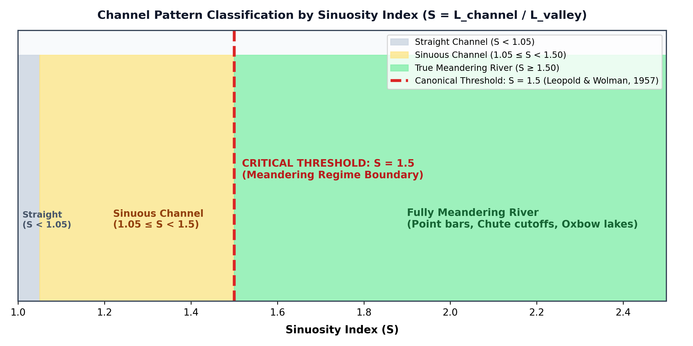
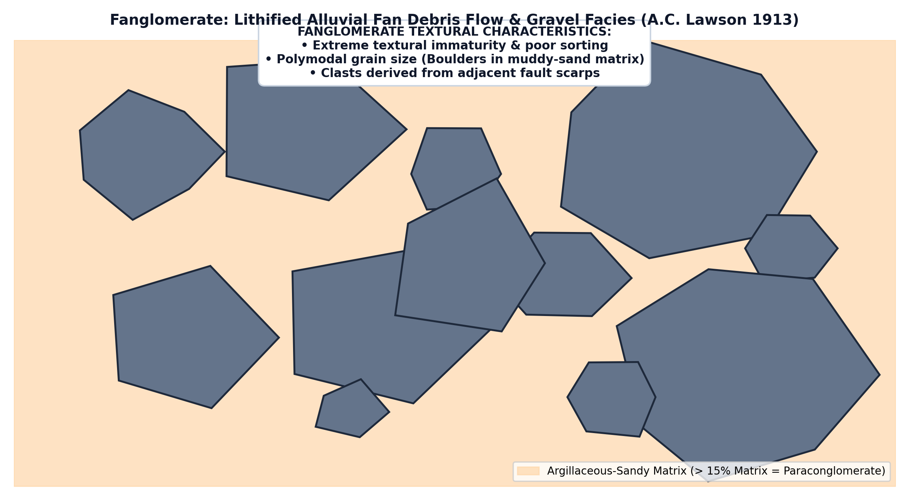
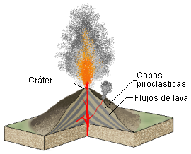
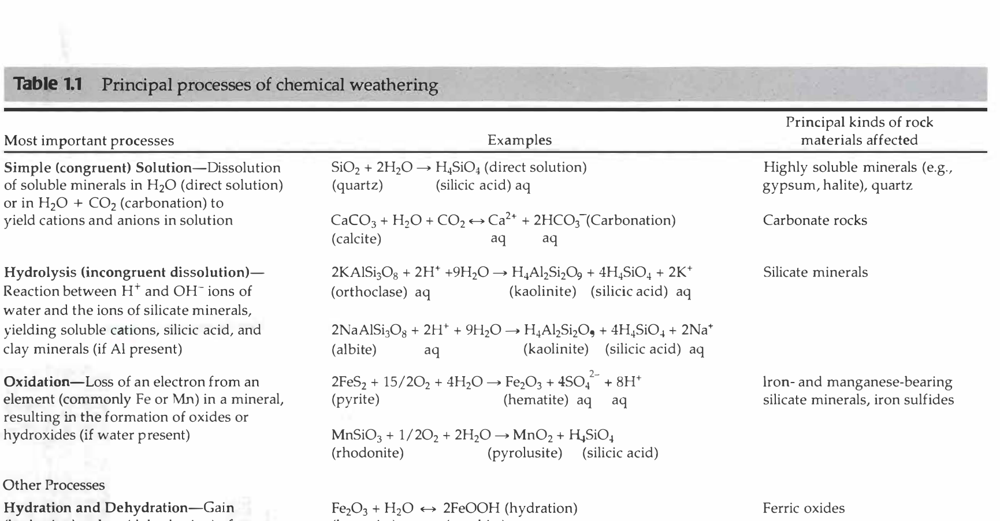
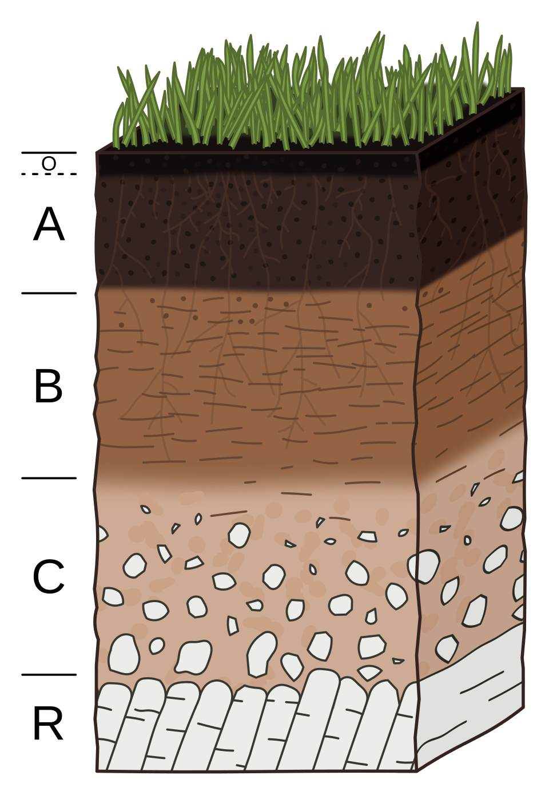
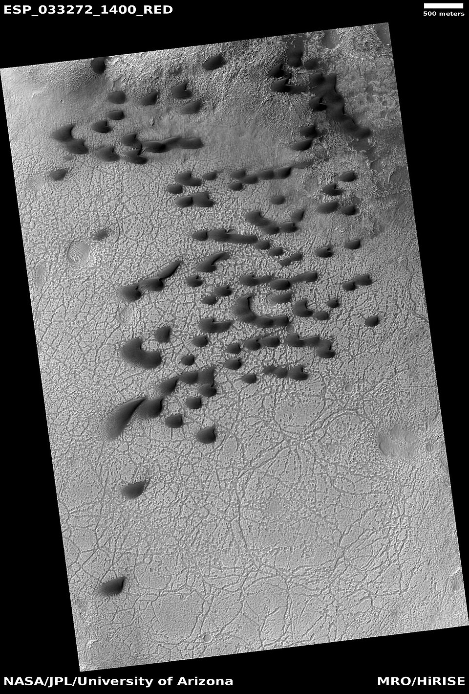
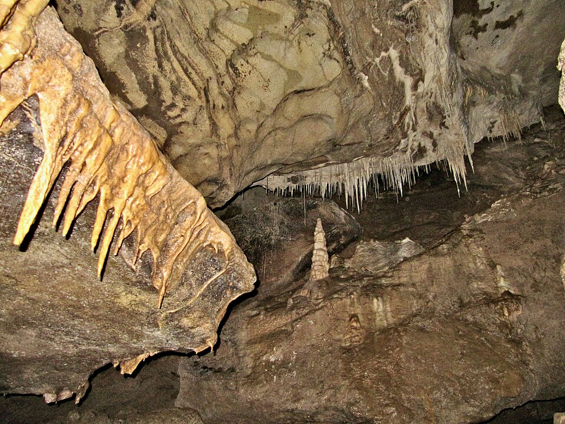
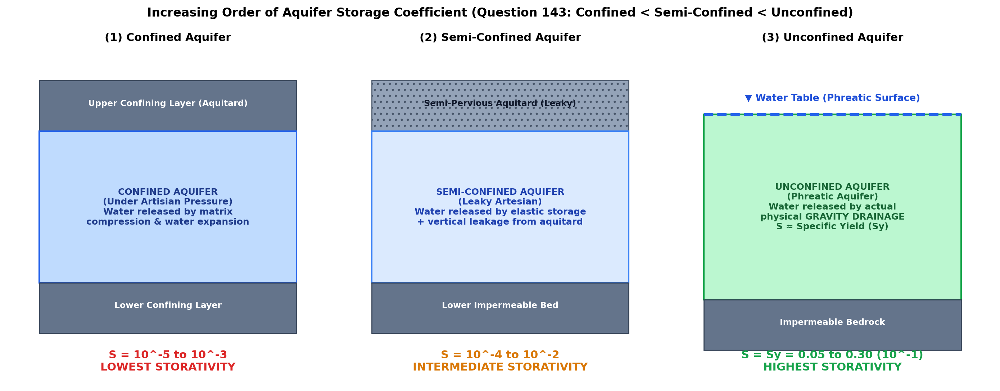
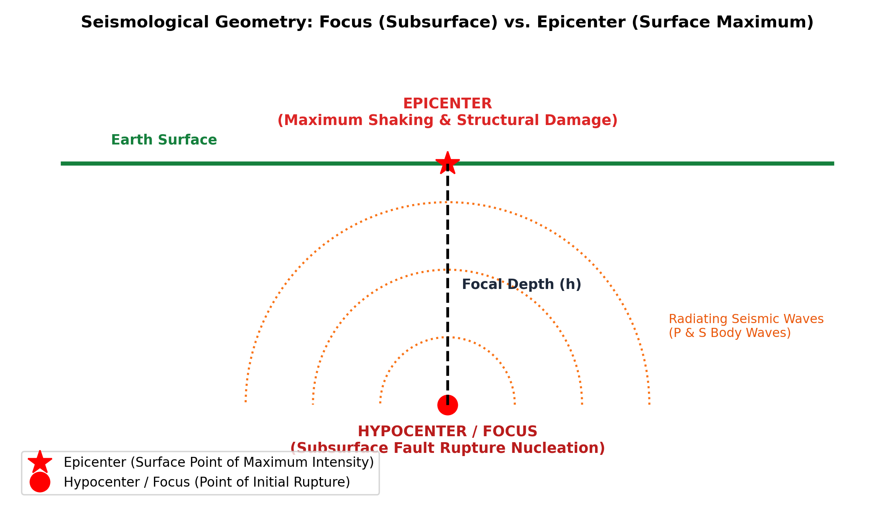
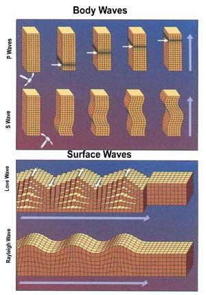

“i ae physical G 2 eology i 2.1, WEATHERING The rocks break and and pheric agencies like wind, sun, be sad under the influence of the atmosThea |, sun, frost, water and organisms, and produce This pnoorcoon i called “weathering”. Weathering and Leapaats ) lowers the mountains and produces Hs erosion together. sed: Ucfined as a process which tends ti pea The weathering may be ines sues ("As and decompose rocks in place. It > PRS (i) “disintegration” or physical breaking, and (it) decomposition” or chemical decay. In nature these tv eta 4 simultaneously. 7 wo processes work Erosion, “Erosion” is a process which includes the destruction of srk rocks and removal of the product [rom the site of destruction. transport 15 the important aspect of erosion. It is usually done by water, wind or ice.. °:: Denudation. ‘The combined effect of weathering and erosion is called denudation”. [involves the general wearing down of the earth's surface.
Exfoliation. It is mainly a physical weathering process in which large sheets of rock peel off from an outcrop. In exfoliation, reduction in pressure due to removal of the overlying rock plays an important part. As each slab breaks off, it releases weight from the underlying mass. Asa result ils ouler layers expand and separate from the rockmass. Exfoliation is commonly seen in homogeneous rocks like granite.
Sphervidal Weathering. Ir an outcrop: of jointed rock is subjected to chemical weathering. the rounded boulders ae produced. This process 1S called “spheroidal weathering”. The spheroidal weathering ee i foliation except that it takes place oo a much sanaller seale- i a He weathering, the hydration ‘which is accompanied by Imereas® in'vonens plays an important part. As the minerals in the rock weather to clay, as increase in size because of the addition of water into their structure. [Ts increase in volume exerts an outward force due to which the concentric layers of reck break loose and fall off.
2.2 Physical Weathering J
Physical weathering or disintegration involves application of mechanic- 4 cal forces. In physical weathering a rock breaks into smaller pieces without i any chemical change. Thus by breaking rocks into smaller pieces, physical fa weathering increases the amount of surface area for chemical attack. The principal agents of physical weathering are ° (o frost, (ii) heating and cooling, and (11) organisms.
When water freezes, il expands about 9 percent of its volume. In nature water enters into cracks of rocks, Upon freezing it expands and exerts great pressure on the walls of cracks. AS a result, the rock breaks into pieces. This process is called “frost wedging". By this process angular fragments of rock are broken off from the high mountain ranges. 7 These rock fragments roll down the hill slope and accumulate at the base to form “talus deposits”.
2.2.2 Heating and Cooling
ft is believed that daily cycle of temperature change weakens rocks, 4 particularly in hot dry regions. Healing a rock causes it to expand and cooling causes il to contract. The repeated expansion and contraction tend to develop cracks in rocks. In desert areas the coarse grained rocks like granite, disintegrate soon into their constituent c crystals and become desert sands as a result of temperature variation.
2.2.3 Organisms
Plants, burrowing animals and m en pli = tegration of rocks. Plant roots grow pias ct Fe ae thicker, they exert mechanical pressure and wedge dee ce os OY burrowing animals, such a1 earth-worms, ants geet ok apa The to the disintegration of rocks. Men also break sock ee a? contribute tunneling, quarrying, mining and cultivating the fa 'y making road cuts,
2.3 Chemical Weathering -
Chemica! weathering ig or decomposition; legion) an by ebrinica decay of innedile by qhsagrd in which rocks are musical reactions ac. ing chemi more stable forms. The principal meets which changes then weathering, water, and (¢!) organisins. cipal agents of chemical Sur minerals to weathering are: (i Water is the main agent of chemic form is inactive, it becomes a powerlal ce erine, Althoueh ater in pure Powerlul chemical agent when a stall an of oxygen and carbon dioxide are dissolved mit. Rain w: " vara these gases. The main reactions involved in the chermics! weatheyag a i weather!
(2) oxidation, (1) hydration, (iii) carbonation, and (Cv) sohnion. meas bhai The oxygen present in the water in dissolved state oxidizes scone miners Is. Mafic minerals Jike Pyroxenes. amphiboles and olivines contain some iron. During weathering the oxygen unites with the iron producing insoluble iron oxides. Limonite and hematite are the very common products of oxidation which impart red and yellow colours to soils Hydration. In hydration water molecules combine chemically sith minerals to produce new compounds. The formation of gypsum (CaSO, 2H,0) from anhydrite (CaSO,) is a good example of hydration. Carbonation frequently operates along with hydration. The orthoclase felspar. a muneral. which ts abundant in granite, is decomposed and converted into kaolin by hydration and carbonation. Other hydrous silicates termed by hydration o1 the primary silicates, such as pyroxenes, amphiboles and olivine are chlorite, serpentine, talc and zeolites.
Carbonation. Carbon dioxide dissolves in water to form carbonic acid (H,0,). Carbonic acid is an effective weathering agent. Granite is the most abundant continental rock. Under the influence of carbonic acid it weathers into clay. Let us examine this process in detail (i) The granite consists mainly of quartz and potassium felspar. Quartz is very resistant to chemical weathering. Hence il remains unaltered.
(ii) The reaction between carbonic acid and potassium felspar is as follows. 2KAISi,O, + 2H,CO, + H,O— AlSi,04OH), + 2KHCO, + 4SiO, (iii) The products of this reaction are potassium bicarbonate and clay minerals. The potassium bicarbonate being soluble i emavel by ground-water, while clay minerals accumulate near the surface. ‘The weathered products of important silicate minerals are shown i Table 2.1. When minerals containing calcium, magnesilim, S08uH poms sium react with carbonic acid, carbonates and bicarbonales are lormet The Juble products are removed by groundwater, The three remaming ae SE vieon and oxygen join with water to produce stable elements, aluminium, silicoa clay minerals.
Table 2.1, Products af Weathering: Minerat | Residual Product _| Maverial in Soiuion Quartz Quartz grains Silica Felspars Clay minerals Silica, K*, Na“, Ca Hornblende | Clay minerals, Silica, Ca". Me Limonite. Hematite. | Olivine Limonite. Hematite | Silica. Me™ Solution. The process of solution and cafgonation goes on together. The limestones, dolomites, rocksalt, and gypsum are particularly susceptible lo solution when they are attacked by water containing carbon dioxide.
2.3.2 Organisms
Many dead organisms produce organic acids as they decay. These acids increase the solvent power of water. For example, the solubility of silica, alumina and iron is much greater in the presence of organic acids.
2.4 Rates of Weathering
The rate at which a rock weathers depends on the following factors.
1. The particle size influences the rate of weathering. The smaller the particle, the greater the surface area for chemical attack.
2. The mineral composition of a rock is also very important. The slate which is mainly composed of clay minerals is very resistant to weathering while this is not true for marble.
3. The order in whuch the silicate minerals weather is the same as their order of crystallization. From Bowen reaction series (Fig. 5./5) it is Clear that olivine crystallizes first and it is the least resistant 10 Weathering, while quartz. which crystallizes last, is the most resistant.
4. The rate of weathering is also affected byrithesclanaiin figs Chemical weathering is most active is Sm le tape least active in cold ar arid regions Regolith. Any solid unconsolidated.
Materia called “regouth”. Tt includes soil, alluvium ana one on OP Of bedrock is from the bedrock. The thickness of | and rock fragments weathered of this mantle varies fr Fi exposures lo very deep in areas protected from erosion rom nil over rock Soil. A portion of the regolith: called “soil”. Thus soil is a cerateg net ePPOM the growth of plants j f is a combination of minerals,: Plants is aac » Organic matter, water
2.5.1 Soil Profile un
7 If we examine the walls; of a trench, they are found to a de ca: contain a series of horizontal See cone eS | women; layers. These Inyers are fastse - -2 3/8 nemetee j called “horizons”. All Pe eerearg horizons together form the WE aE Es ee Panisge: “soil profile” (Fig. 2.1), The Net ates &, three basic horizons from raseeT nett top to bottom are A, 4, and ron Fig 2.1. Soil profile; (i) A-Horizon. It is the upper most layer of the soil profile. Its also called “surface soil”. This layer contains organic maticr and micro-organisms. In this layer the greatest biological activity takes place.
(ii) B-Horizon. The B-horizon is also called “subsoil”. This intermediate zonc is also called the “zone of aeeumulation”™ as much of the material which is leached out from A-horizon, is deposited here.
(iii) C-Horizon, The lower horizon is called “C-hortzon” It manly consists of the partly altered parent rack material.
2.6 Climate and Soil Formation
In “arid regions” where days are very hat and mghts are cool, the rocks shatter mainly by the influence of unequal expansion and contrachoa. The soils thus produced contain the grains of minerals which are disintegrated from the original rock. The surface layers of such soils often become hard due to the crystallization of salts. The evaporation of water brings dissolved salts to the surface. by capillary action which cements the upper layer of the soil. The lime crust is found in the desert soils of Texas, New Mexico and - north Africa, while the gypsum crust occurs 1 Egypt and central Australia deserts. In “arctic regions” the ice and frost activity take part in rock disintegration and produce a soil consisting of undecomposed tsizeral and rock per” lides. The soil mantle which is usually shallow, is characterized by. silt, peat and water in a permanently frozen stale.; In “humid temperate climate” the rocks are weathered predomi nanily by a combination of both disintegration and ecormposiion oe Lee anal ‘i:haracterstic development’ type of soil is formed. Ly soil shows the cl pron ane ecm the chemical weathering plays aii active role and In “tropical climate |y up to a great depth. The most common soil rocks are weathered thoroughly $$ cnet of the tropical areas is “laterite” which develops as & result gir q «ve weathering most of the silica is leached oul and the of silicate rocks. During weathering most « ate new the surface to insoluble hydroxides of iron and aluminium accumulate ‘paca ive ri bi sidual deposit. Laterite is a very useful construe: give rise a reddish brown res Te ei iad backs which tion material. When moist, it is soft and can be cut easily ‘ become very hard on drying. — = ‘The soils of both the temperate and topical regions may develop nc F pan" at some depth below the surface. The downwardly noving Tes water 2 may bring leached silica from the upper horizons to Tower horizons where 4 it is redeposited. It causes cementation of the soil layer. This type of hard, well cemented and impervious layer of soil is called “hard pan”. Such hard pans present very useful horizon for the foundation of buildings and other a4 structures.
2.7 Soil Types
= Depending upon their mode of formation, the sot! deposits have been a broadly grouped into two classes: (1) residual soil deposits, and (it) transported soil deposits.
; Residual Soil. In plain areas the products of rock weathering continue to accumulate in place aver the parent rock masses and give rise to u “residual soil deposit”. AS the action of weathering decreases with depth, such soil deposits gradually change from soil at the surface to broken rock fragments and merge with fresh rock underneath. The conunon examples of residual soils are laterite, terra-rosa, and peat bogs. ‘Transported Soil. The weathered and broken rock materials are eroded and transported from one place to another by natural agencies such as wind, water, ice or gravity. The deposits of soil formed in this manner are called leipored of deposits". Such soils generally have no relation with the bial tae ieee The transported soils have been classified according ie nature of the transporting agency responsible for their formation. This i. This classification has been given in Table. 2.2.
‘Table 2.2. Transported Soil i Transporting Agency Nature of Soil Rivers Alluvial deposits Se f. 7 | Marine deposits Wind i Elian deposits Glacier |: LO | leit deposit PHYSICAL GEOLOGY a“: The size of the svil particles are extremely variable. It ranges from a big boulder to Line clays As per the Indian Standard Institution ( 1948-1951): the nomenclature of suil particles according lo size ts given i Table 2.2. The soil containing mixture of clay and sand is called “loam”, and the clayey p soil having appreciable lime content is called “mar! ‘Table 2.3. Nomenclature of Soil Particles ee Name Sistemas, Boulder 60 mm or more r mi BEE Laaaepimmeneremeeet Gavel Baween 60-20 mm slp Rectan eet f Course sand | Between 20-06 mm i Medium sand | Between 06-02 mm samme a; Fine sand Between 0.2-1.06 mm ff Sil Retween U.06-0.002 mm Chay Less than 0.002 mm
2.8 Work of Wind
eo The air currents in motion is called “wind”. The wind is an important agent of erosion, wansporl and deposition. Its work is particularly sees: in arid regions.
i 2.8.1. Wind Erosion Although wind erosion is not restricted to arid and semiarid regions, it does its most effective work in these areas. Wind does erosion in three ways i: (i) deflation, (fi) abrasion, and (itt) ultrition.
(i) Deflation. Lifting and removal of loose material by wind is called “deflation”. By this process the land surface is gradually lowered. ¥ In many desert areas deflation produces hollows or basins with their bottoms al water table. Such basins containing some water are called “oases”.
% (ii) Abrasion. During dust stroms the wind carries minute grains of i sand in suspension. They dash and collide against the exposed 4 rock masses and cuuse erosion. This process 0 which sand grains are used as tools for eroding rocks, is called “abrasion”.
(iii) Attrition. The particles that uavel with wind, collide against me nother, These mutual collisions lead to their further break dows 4 ‘and the process is called “audition”.
I ERING GEOLOGY q 34 PRINCIPLES OF ENGINE! 2. Exosional Features 3 P i
2.8.2 Erosion erosion are polishing of rock faces and
The important features of wine ee formation of ventifacts and peatesal roc} ag <j near tl ground surVentitacts. Wind armed with <2) pebbles and boulders are ¥ face. This effect is called “sand ae vies and sharp edges. If these y subjected to sand blasting they aac Fardness, ey ecome pitle d. Such i 4 stones contain coarse crystals of uneq ua’ aa ‘pap cuges are called “vert; 4 Stones which are polished, pitted and con i i ia tifacts”. ‘These stones are faceted by a a erosion of their windward side.
a Pedestal Rocks. Pedestal rocks dh are the undercut vertical columns of — 8 vecks which have wider tops and war W!NP gas: ah rower bases. When wind blows, the OEP cs fon ia sam particles being heavy travel near sit the surface and cause undercutting of rock faces (Fig. 2.2). Fig. 2.2. Pedestal rock. H re 2.8.3, Wind Transport i So) ‘Turbulent wind can easly sweep small dust particles and camry them to a great distances in suspension, Sands, however, are transported in a series of: jumps or these merely roll along the ground, The process by which sand i particles travel in a series of jumps is called “saltation”. The greater part of The sand grains are transported very near the ground surface and they are seldom lifted more than a meter above the ground.
: 2.8.4 Wind Deposits ‘The wind deposits arc commonly called the “eolian deposits. The rock satel es gris a scaly well rounded and are sorted; ‘ r size and weight. Wind deposits are of two types: (I a accumulations of s 2 “ oe ". rypes: (1) fiee ions of sand, called “sand dunes", and (ii) deposits of silt, called * Sand Dunes. The wind; -; mounds are called "sand parleera alae sand in mounds. These F tceumulates wherever ccs any bsiution cack Sso pe ome in wind ‘As the accumulation of sand grows, i ua a Such as a boulder or a bush. ips even nore sand. In this manner POSITION OF DUNE # WIND ‘ contin! PN AT A LATER TIME pee I shee HE As Be fatieuae. 4 ts migrating with wind, oe Se i J} i ul / dunes are created. Sand dunes have a gentle slope (5° to 15°) on the windward side and a steeper slope (20° ta 301°) on the Ice side. The height of sand dunes depends on the wind speed and the size of sand grains. Dune heights of 30 meters are not uncommon. The sand dunes migrate slowly in the direction of wind movement (Fig. 2.3). In some cases they move as much as 20 meters per year. The migrating sand dunes may advance and cover farm land, rail roads, highways and other valuable property. Their movement may be checked by planting vegetation. The sand dunes are of four types: (i) transverse dunes, (if) barchans, (iii) longitudinal dunes, and (iv) complex dunes.
() Transverse Dunes. Transverse duncs have their longer axis at right angles to the direction of wind. They are formed in areas with strong winds where more sand is available.
(i) Barchans. “Barchans” are crescent shaped dunes the nee convex side of which faces ay MORNE the wind directivn. The 4 id horns ur wings of the cres- & é::€ cent point in the direction “4yg Ne of wind flow (Fig. 2.4). eg Sa Barchans are farmed where » wind is nearly unidirection- DiRECTION OF WIND al. They occur in groups in areas of greatest sand supp- Fig. 2.4. Barchans ly. The height of large ‘ dunes does not exceed 30 meters and their point to point length is generally 300 meters. a (iii) Longitudinal Dunes. The dunes which are elongated in the wind direction, are called “longitudinal dunes”. These dunes usually develop in strong winds in arcus where small amount of sand is available, The longitudinal dunes may reach heights of [00 meters and may extend for about 90 kilometers. In the Arab countries these dunes are called “seifs” because they appear similar to un Arab sword.
(i) Complex Dunes. In areas where the direction of wind varies, “complex dunes” we formed. They are of irregular shape.
Loess. The suspended load transported by wind consists mainly of silt and dust particles. When it settles, it forms a blanket deposit of silt, known as “loess”. These deposits arc typically nonstralified and have a grayish yellow colour. Loess is composed of many minerals including quartz, felspar, hornblende and calcite. These materials are derived by wind. from deserts or from flood plains of rivers. Deposits of loess are very fertile. Loess deposits in some parts of China annroach a thickness of 300 meters or morc. a |i a PRINCIPLES OF ENGINEERING GEOLOSY 29. WORK oF STREAMS y size, from the 7 The term “strean” includes the channelized Mlow emits smallest brook to a very large river like Ganga. ee preferably used 7 and “stream” are used synonymouslys the terin * Oe il °, to denote a main stream into which several tributaries low. 7: ‘The geological work of streams is to “erode” the alles: alte eck the material thus eroded, and “deposit” the same 18 the ower ee favourable sites.
2.9.1 Stream Erosion
The streams cause erosion in four ways + (i) chemical action, (i) hydraulic action, (fii) abrasion, and (1) attrition.
Chemical Action. It includes the solvent and chemical action of water on country rocks. The chemical decay works along joints and cracks and thus helps in breaking the bedrocks.
Hydraulic Action. The swiftly flowing water hammers dhe uneven f faces of jointed rocks exposed along its channel and removes the jointed blocks. This process of erosion is called “hydraulic action”. At the bottom oe piste the channels are eroded at an enormously rapid rate by theydraulic action.
, Abrasion. The flowing water uses rock fragments such as pebbles, gravels, and sands as a tool for scratching and grinding the sides and floor of the valley. This process of erosion is called “abrasion”. a Attrition. Ii eaki wiceea es heap come Ses tun to Rete eh caus Sie rani Toiadel acl enalrinatee: iscs the rock fragincnts to become more Jn addition to the abov ee ‘ means, Much of the material pea acquire their load by many other round water: sessional Tne: aid tind deh ae is contributed by underage Stream Transportation amount of solid material “load”. erial transported by or 7 foal, the Streams transport it in three ways: ic stream is called its a suspension (suspended load), and (ii in solution (dissolved i" ‘ and (it) along the bottom (bed f dissolved Load.
groundwater. Some ates dissolved load is brought t Which Occur slong the anno is also acquired direct © the strean by sionien € the sucam’s course, 'y from soluble rocks Suspended Load.: cartied by stream: Suspended load forms the raj in suspend deat: Usually only smaller particles seat Potion of Pension, but during flog ler particles such mn of the load 8 floods much Lar, Such as Clay and sj!
#€C particles are car + silt travel: © canied this way. PHYSICAL GEOLOGY a Ded Load. The forward force of moving water acts more directly on the larger grains al the bottom, pushing, rolling and sliding them along. The particles moved in this way constitute the “bed load” of a stream. Locally the medium size material may travel partly by rolling as bed load and partly in suspension. This process of intermittent jumping is called “salrasion”. In saltation, the heavy particles are lifted occasionally for a few seconds by a swilt eddy.
The velocity of a stream is affected by a number of factors, including 1 gradient, channel size and shape, load, and discharge. The increase of velocity increases the transporting power of a river as much as the 6th power of the velocity., ‘Transporting Power « V° It means that during floods the transporting power of a steam suddenly rises very rnuch and it becomes capable of moving big boulders which would otherwise remain quite immovable.
2.9.3 Deposition:
The loose: rock materials transported by a stream downstream, arc deposited where the velocity of flowing water is reduced. The sorting of the material takes place automatically as the large and heavier particles settle quickly while the smaller and lighter ones continue their journey further ahead. The material which a stream deposits as sediment is called “alluvium” or “alluvial deposits”.
2.10 Features of Stream Erosion





Pot Holes. “Por holes” are the circular and decp holes, cut into solid rocks by sand grains and pebbles, swirling in fast eddies. They are commonly fount on the channel floor.
Waterfalls. ‘The falling of seam water from a height is called a “waterfall”. Waterfalls occur at places where the stream profile makes a vertical drop. Such a situation is usually found where gently inclined, erosion resistant beds overlie the HARD Roe nonresistant beds, The Riven softer rock is eroded weap Peer ert se fast while the harder nN.
one offers resistance EPrrscosey aM and forms a ledge at a Biss SS la { ln waveaeae height, from which the Sa Fe ny stream's water falls =o5 55555 Saat down deep into the acai Ss, gorge (Fig. 2.5). When sog4 4 ae Ui ners the water falls over the Rock |) Tae Jie ledge, it erodes the less ar ore
uNDeRcuT SIDE t
causing erosion at the oul- Sper.: Side of the curve and deposi- Brgy fl-4tion on inside of the curve...-7f Bo?) 2h Waser SG]. In this way a stream Cy /. Ce F migrates sideways and —<*7 | FORMER Nata slightly downstream by POINT BaRS\ Noid eroding ils outer bank and 3 1 depositing a sand bar at the tnner bank. Fig. 2.7. Lateral mow::
Oxbow Lake. The #3 are three maine of meanders. 1, 2 f meanders grow by eroding its ¢ meander movement. i inner bank. During this pron ut bank and depositin. 7 ing this process the s} Wg sediments at the progressively and the neck of "arpness of the river bends i a stage comes when the 1) meander becomes narrow nds increases leaving behind is rosa eS OURh he neckeand ns COW: Finally remain filled with stagacee ou OMS. Such left oat ets UOwing straight ant Water, are called “iba, "a id meanders which Entrenched Meanders. On ae many occasions, the land is uplifted. A The uplifting of a mature stream i would cause it to give up lateral (~ Rivers of this type are said to be “rejuvenated” (Fig. 2.9). When a = mem river is rejuvenated, it ween starts downculling again. As a result Pa = i the aneandering channel is deepened Zz) = i and the old meanders get entrenched 8 a into the bedrock. Such meanders are ee called “entrenched meanders”. ao 2.11. DEPOSITIONAL.
LANDFORMS ja eS Alluvial Fans, The alluvial | ¢ 27) material which flows down from mountains, accumulates at foot bills where the stream enters a plain. The deposition occurs duc to abrupt DErosiT OF SiLT change in the gradient of river valley.
Such deposits spread out in the shape esc a A of flat fans and are called “alluvial D oe fans”. Usually the course material is Weta! of dropped near the base of the slope while finer material is carried further out on the plain, Alluvial fans from many adjacent streams along a mountain may merge to formaling | z: edge BY agdtineat called “age. 0-28: umn of encaehe "5 fluvial aprons”. mugen TERRACES Flood Plains. During foods af: 4; river overflows its bank and sub- Y tel ia ahaa 7 merges the adjacent lowlying areas ti | cal ty where deposition of alluvial (ZZ ti material takes place. A wide belt of Yyy if Wy alluvial plain formed in this way on ZZ YELL either side of a stream, is called 555 9, River valley showing rejuvenation. “flood plain”. Its name is appropriate, — NS RIVER roo PLAIN because the Mood Y nly. when a rivet Y TTT Z Yi) Yj} overflows its bank at YYW. UY flood stages (Fig.
= wae ig. 2.11. Structure of delta. T-Top set beds, F-Fore set beds, B-Bottom set beds. u (i) Bottomses Beds. The thin horizon shi. i joony erv-edliel “Saree coal et) which overlie the ocean in fine com sediment, such as silts and clays, yeomporet ii) Foreset Beds. Forcsct beds begii of botiousel beds. These beat are om Prior to the accumulation which is dropped almost immediately when shoes eet orocean, The foreset beds By when a river enters a lake angle of a appear similar to crossbeddit i ugle of slope varies from 12° to 32° d: ing and their of the material. "depending on the grain size = ai (iii) Topset Neds. Fore “. Foreset bed topwet beds, These beds occupy thé ups nate te et They are composed of » mixnee the upper surface of the delta. a ts Of u mixture of coarse and fine materials Major rivers, such as the Ganga, form |: 1 ilixnctess intwes: On lenin ae deltas thousands of square; Scseial salter ranches salad "ald obaistie™ Meg ekeas nee various paths to the sea, ares" Ties Goa ee
2.12 Base Level and Graded Streams
= erin Profile. Plot of the relative elevation of a stream bed from a He mouth is called its “longitudinal profile”. The longitudinal profile of a stream is generally concave upward which is in accordance with the steady downstream decrease in slope.
ase Level. The level which controls the depth of stream erosion is called a “base level”. As base level is the lower limit of the longitudinal profile, streams can not cut below this level, There are two types of base level: (i) ultimate base level, and (ii) local base level. The “ultimate base level” represents the lowest level to which a stream can erode its valley. It is therefore the level at which the mouth of a stream enters a Jake or the ocean. Resistant rock beds, waterfalls, lakes or artificial dams which lie along ariver course form “locat base levels’ They act as limiting levels for the stretches that exist immediately upstream. Thus local base levels are temporary obstructions to downcutting encountered by a stream, Any change in base Jevel causes a stream to change its characteristics. Lowering of base level increases the streams gradient. As a result the velocities increase and downcutting is accelerated. The erosion first starts from near the mouth and then works upstream until the stream profile is adjusted along its full Iength, Thus the bedrock channel is deepened and pants of the old valley floor are fellas a terrace along the walls of the new valley. Such steps-like features are called “river terraces” (Fig. 2.9 and 2.12). TeaRace t TERRACE & 7 ay el ree DRC ghee Soe meson PLAINS DULL given CHANM EL Se Sg 7 pes Te STU TSE AS LEYEGT fice ae pig. 2.02, River terraces Scull ing capacity.
, ves the strain's sediment transporting Ase nbs 1 eal sediment thereby building up its channel. fas a result the Susan AEP zen is towered to sve ‘an extent that Sometimes the capacity is vc, Now the single river channel can no longer heavy ageridation tokes plac ° carry its load. In such circumstances the individual channel subdivides itself into a series of smaller channels. These channels are separated by many low islands which are the products of heavy deposition. Such a stream is called “braided stream, Profile of Equilibrium. Streams have tendency to cut and remove the material from high ——<— gradient regions and oe co aa deposit it in the low GRADED PROFILE CO EN cae gradient areas. In duc Ee lighe tat course of time when a 3 pore eta of Ed uniform longitudinal oo” re ae Re slope is developed uae See BASE HUEVEL, “Lg i oe throughout the stream FRO et Srosion ana Jepestion Fie 213. Graded profile and base level ceases. Such a slope is called the “profile of equilibrium” or “graded profile” of a sweam (Fig. 2./3). Thus a greaded stream will not crode or deposit material but will simply transpon it. As a matter of fact this stage j is never reached due to many disturbances.:
2.13 Drainage System
Drainage Basin. A land area Y " surrounded by divides which x 7 contributes watcr to a river, is called “drainage basin”.
Divide. It is a ridge of high ‘ ground which separates two! drainage basins. Divides range in size from a ridge separating two, small gullies to “continental divides” which divide continents o: into large drainage basins.
River Capture, “River cap- a us j. ture” is a process by which a past = of the drainage of une river is q diverted into another. Due to greater discharge, slope or other 4/, factors, the stream on one side of a divide may crode its valley more actively than the stream on the opposite side. While ok - valley headword, Fig, 2 14, River zone ) Sh q y reach the s. Cth a bas 4) She € less active river tiers x and y, (J) Showing a ple ibe 4 iver y captured by a wi by breaking down the divi a y ide be drainage into its own channe} ae ay ne re eet tor all of ia occurs in the youth Stage, It (coca | —e cou and Is rare in large rivers ess Common as streams grow larger
2.13.1 Drainage Pattern
Although all drainage ‘ er shai REI ae ee networks branch in the same way, the shape of Breally from one kind of terrain to another, d oni upon the rock 'yPe or structure. The chief draina iD deacete (i) wellis, (itt) rectangular, (tv) radial, and ty) ar an ns (i) paride Pattern. In “dendritic Pattern” the streams show a ‘anching tree like arrangement [Fig. 2.15, - 2.15 (ai). This patie develops in terrains covered with un; ch é ith uniform rock ty ch a ters errains nil ypes, such as a sedimentary rocks or massive igneous or metamorphic Pape p ca SAF f ras PO whens or (Se fee yi nock: CAL (By « 4 pdr Fig, 2.15. Drainage patterns. (a) Dendritic, (b) Trellis, (c) Rectangular, (d) Parallel (i) Trellis Pattern. A “iretlis drainage pattern" is one in which major streams ure parallel and short tributaries join the main stream at ae “ “ a4 PRINCIPLES OF ENGINEERING GEOLOGY nearly right angles (Fig. 2.15 (b)]. This type of drainage pattern develops in regions containing folded or tilted strata, Here-the F main stream develops in the strike valleys cut into the soft rocks,: while tributaries flow down the resistant ridges.
= (if) Rectangular Pattern. Differential weathering of fauhs or joint a systems in bedrocks localizes the stream flow producing a more ae ordered rectangular drainage. Ina “rectangular drainage pattern” Re angular deflection of steam courses are apparent [Fig. 2.15 (c)) 23 (iv) Radial Pattern, In a “radial drainage pattern”, streams flow oN outward in different directions from a central high point. This Aion, pattern commonly develops on an elevated structure such as a Senge volcano or dome.
a oe (v) Parallel Pattern, This type of drainage pattern develops in a terrain containing tilted rock beds and parallel faults. The major ee stream occupies the fault while tributaries which are parallel, meet Seren the siream approximately at the same angle [Fig. 2.15 ()]. ie 2.14. TYPES OF STREAM DEVELOPED ON Sere STREAMS WoRLTONTAL BEDS ee, Ou the hasix of 4 #; development and ori- ZS Ki gin, the sircams have er. git) been classified imo four = fF _ ap, Uf: groups: (i) consequent B3 se Se “rf y/}?
streams, (it) subsequent eaeeoore = / i y a Streams, (Hf) antecedent — Fe Sesto ENN NV Vi): streams, and (iv) super-. AN i V4 posed streams. tA) =< N: SY Ory (i) Consequent gens Streams.
Raa Consequent —pompon tar weos coh Streams are REMOVED BY ERosION Bt those which ea follow the ro. slope of the LENS | Sr Ste a hiner FS.
initial land < Se LF, 27) surface, ps 8 rf Suisequent FES NO F Streams. on. Se 7 ‘These are j- — AW 4 buiary ste C8) NYY % Teams which Fig. 2.16, Development of “S develop (a Stream der ct! superposed siream.
Poon Heloped on horizontal beds, (b)§; 7 developed on folded beds, eM” PHYSICAL GEOLOGY 4 ee oe eres the sloping sid 45 i ee i Sides Uf a stress oe Be te ee eam Valley. Subseque i lake their course along the we ie Subsequent streams generally Se ee as rock boundaries. feat net ewilY exodihls zones. sichy Ree discovered and cruded afer Smt et. These weak zones ase | Ae ‘Areaniy er the development of the consequent a (iid) Anteced Bese a ‘ent Streams, Antecedent streams are th. ee ss le 1o. maintain their ams are those which are ): leir original course across the area of upli Bove (iv) Superposed Streams. Geolo pee 3 RE course of a sireain Sot events may strongly control the } ee horizontally bedded younger formation ros es rae on expose the underlying strongly folded and foched onion eck Tirging undiess: Over ie Ge hed he older rocks, the stream courses will es not easily adjust to form a wholly new drainage pattern ap 13 mana i the structure of rocks. Such streams are called “su reams" (Fig. 2 pe; ee fe i ig. 2.16), Supcrposed streams do aot show a 1e structure nf the underlying rocks 2.18, STAGES OF VALLEY DE 2.15, STAGES OF VALLEY DEVELOPMENT ee The development af streani valleys takes place in a orderly fashion. A valley passes through three stages during its evolution. The three stages are: IRR Ry (11 youth stage, (f2) mature stage, and (ii) old stage. " | 3 Uy Youth Stage. A strean is sand Jo be in the youth stage when it 1 3 cuts its valley downwan to establish a graded condition with its ime hase level. [Fig. 2.17 cal la (a) Position. The yuuth stage is commonly found in moun- ib lainous regions from where a stream starts its journey. E (6) Erosion, Downcutting is dominant | a (c) Valley. Narrows V-shaped valley. d) Longitudinal Profile. Longitudinal prolilz is upgraded s 8 ig PF The gradient is steep and waterfalls and rapids are common eS (e) Valley Floor, The stream occupies mast of the width of Cs the valley floor as a result there is litle or no flood plain, a§ () Stream Pattern. The stream course 18 angular and without a meanders. Tributaries are short and few. 3 (i) Mature Stage. A siream is satd to he in a mature stage when i & downward erosion diminishes and Interal erosion dominates (Fig. an (a) Position. Mature stage is found in the plains lying ad | i jacent lo the mountain region: y; 46 PRINCIPLES OF ENGINEERING GEOLOGY 5 Sem ats ee 2 ee Sl Ros {Mh wer. Aieeas Aye | fie. Nee - v [Se a i (A) YOuTH STAGE (8) MATURE STAGE: ci Rez 2.
4 ee Zs RS Fe
(c) Valley. Broad and trough shaped.
(d) Longitudinal Profile, Waterfalls and rapids are absent,: Valley bottom is graded so that the longitudinal profile its exhibits a relatively smooth curve. The gradient is moderate.
: (e) Valley Floor The stream swings in meanders. The flood ‘ Plains are narrow and sandbars are present, i (f Stream Patiern. The Steam moves in meanders. The é ‘ tributaries are many, # Old Stage. In old Slage, the flood plain of e a 7 Plain of a stream becomes i: several wee wider then its meander belt (Fig. 2.47 (o)]. - (a) Position. |; 4 Slit he old stage is found near the month of R eo PHYSICAL GEOLOGY ae ole Re flood plain. The rae rsa cea io entage the Ra Be u z a steam is ter rew ae ( si an sediment of the ford plain Se ©) Valley, Valleys be: ge: ' eS Become wide and open with bow boun- See daries which may be indistinct, pen with bow boun, Poe (i) Lonpttinal Profi The gradient becomes very low. The SS fee iM approaches base level and it upgrades strongly. 2 Zee (©) Valley Floor, Oxhow lakes are conannn. Natural levees oe are also present, They are accompamed by back swamps and yazoo tributaries. The meander belt is sarrerer an the valley floor, 4 (D Stream Pattern. The stream pattern is meandermg with ES ‘oxbow lakes. The tributaries are few and large: a 3 Tn the above discussion it is assumed that the base level of a stream 5) Temains constant as a river progresses from youth to old stage. On many E occasions, however, the land is uplifted. The effect of uplifting on a mature 3 stream is to abandon lateral erosion and revert iw downcutting. Such rivers Saeco are said to be “rejirvenated”. Mature streams readjust to uplift by cutting a ee new flood plain at a level below the old one, This produces step-like features = in the river valley which are called “river terraces” (Fig. 2.42) y "2.16. CYCLE OF EROSION ae To understand the cycle of evolution of a landscape, let us start with a & relatively fat upland area in a humid region. E 1, During the youth stage, the area remains more or fess flat. The stream valleys art generally narrow. Bee.
2. In mature stage, the relief of the land increases end the landscape Riles is changed into one consisting of hills and valleys. The “relief” 4 of an area may be defined as the maximum difference in the elevation. ne | 3 3, Inold stage, the streams will approach base level and the land inal 1 = 3 3 be reduced to a peneplain. The “peneplain” is an ere | ae which lies nearly at base level, Some mounds iene. B rocks still persist. These hillocks are called “mona. 1 oe 1 ERING Bas 2,17. RIVERS AND ENGINEER! Fees; i x a ‘vil 1s, some o! i Rivers present many practical problems to civil enpinee ] BS which are as follows. F; ‘ i cross them for carrying 4 ‘ () Rivers require Sree icvaaniea 4 ox highways and railways. 3 ipieoesiene (ii) Water power, of rivers can be utilized to generate y' ot: F ne ee (iii) Dams are built on rivers to store water for irrigation, Mood control, anil water supply purposes.
(iv) Regulation of river channels arc done for navigation ax! foo control. Fe (¥) River deposits are the important sources of the construction material.
; (vi) The life of some artificial reservoirs is reduced considerably by river deposits. 4 2.17.1, Flood Control = During floods, the rivers cause destruction of life and property and therefore flood control is a very important problem for a civil engineer, The various methods which are used (o control floods are as follows. i (i) Construction of Levees. The levees are longitudinal embankae ments which are built along the river banks to check the overflow 4 of the excess water during floods. The levees no! only confine the = river water into its channel but they also increase hed erosion and 4 keep the channel clean.
oa (ii) redging. It is the process of removing the sediment deposited at ae the bottom of the river channel. Dredging is a costly affair as it Sen has to be carried out all the time.
ed (iii) Construction of Check Dams. The construction of dams for controlling floods is a very useful method. The check dams are usually built on small tributary streams which regulate the flow of main river.
(iv) Diversion of River Water. During floods a part of the river water 3 is diverted and nade to flow through a newly constructed channel. Thus the river water gets divided and the effect of flood reduces. (») Shortening Course of Meandering Rivers, In meandering rivers artificial cutoffs are made to straighten the course, This increases the eflictency of rivers.
he 2.17.2. River Training es The river training is mainly connected with the improve. i teepee provement of the river eS channel for navigation. The various river training measures are as follows, re i (#) Dredging is done \ i a (i) te igi rh lo remove sand, silt, etc. and to deepen the river (ii) ‘Training walls are constructed which restri = restrict 7 Fe a given channel. It enhances the seourin a eli i currents and Keeps the channel clean, OF the water f (ity Low prones are constructed which; ‘ater iw the required portion of tie channel SHOW 9 tiver i niente wr: WI 5 PHYSICAL GEOLOGY e es: « a ie 2.18. WORK OF GLACIER oe ies A “glacier” is a thick o saae thechillnnce' of sia ick mass of ice which moves over the ground under 5 ere: gravity. (1 originates on land from the Boda recrystallization of sow. Glaciers formn im pl bana acerosray eek. Riescaliverbmlidicisae: took coc, Fass f: melts away. They are found chiefly pee te, te the Ari vaginas eral hes ety an high attitudes ths ered. igh elevations as on the Hiznalayan mountain Bee aise above the snow-line, The ” 7 s ey ta The “snow line” is the lower limit of accumul ORCS snow. Belov the snow line the snow melts in summer. The elevation of the ’ f snow line varies considerably. In polar regions il may be at sea level, wher in reas near the equator, the snowly stooge Heino ts cee snow line may occur at 6000 meters, in tse Hon nowline lies at altitudes varying between 4200 to 5700
2.18.1 Types of Glaciers
There are three kinds of glaciers: (f) valley glaciers edmon E laciers, and (lif) ice sheets. a q; (@) Valley Glaciers. The glaciers which originate near the crests of Been. high mountains and move along the valleys just like rivers. are” ~B S called “valley glaciers”. q (i) Piedmont Glaciers. At the end of a hilly region, 2 aumber of q valley eliciers may unite 10 form a comparatively thick sheet of E ice. Such a compound glacier is called “piedmont glacier”. a (ii) Tee Sheets. These are massive accumulations of ice covering a extensive areas. Two such glaciers that ckist today are the Green- 3 land and Antarctic ice sheets. The Greenland ice sheet covers an g ‘area of about 1.7 million square kilometers and is over 1500 meter 4 thick. Bix 2.19, MOVEMENT OF GLACIERS a Most of glaciers move at the rate of a few meters per day. They move g partly by plastic flow and partly by shear movements. In the high gradient = valleys a mountain glacier flows down the slope much like a streamm of water a under gravity. But in basin-shaped, flat or upland areas where the ice can B: not move uuuler gravity, the glaciers move as a result of differential pressure of, within the ice mass. The first type of movement is called the “gravity flow” Ss. nd the second “extrusion flow”. A mountain glacier may have gravity (low <e 4 in one part of its course and extrusion flow in another, depending upon the i. irregularities present in the path. Sy y Tn a moving glacier two zones can be identified:(D rome of flow,and m (ii) zone of fracture. The "zone of flow" is found in the deeper layers of ie. Be Here the weight of the overlying ice is great, and the ice behaves plastically.: However, the upper layers of u glacier have little pressure om them and ‘ therefore the surface ive behaves as a brittle mass It often develops cracks 2 known as “crevasses”. This upper zane is called the “zone of fracture”. a i 2.20. GLACIAL EROSION any The glaciers cause erosion in three ways: (i) by plucking oF 4 (ii) by abrasion, and (if) by frost wedging.. k sure (® Plucking or Quarrying. While flowing over a pulls face, the glacial ice adheres to blocks of jointed " them out and carries them along. wf (ii) Abrasion. The moving ice grinds and polishes the os with the help of rock fragments which arc held firmly within ra hody of the glacier. The abrasion produces striations and groov ’ in the bedrock surface. A polished surface results when the glacier performs abrasion by fine silt-sized sediment. The ground up rock produced by the grinding effect of the glacier is called “rock j flour”.
(iii) Frost Wedging. Thawing and freezing of water in the cracks and joints of rocks break them by wedge action. In this manner rock fragments of all sizes arc added into the glacier. j
2.20.1 Features of Glacial Erosion
Striations, Glaciers carry rock fragments firmly embeded in the ice. ‘They scratch, grind or groove the rock surface over which they move. These scratches and grooves left on bedrock and boulders, are called “striations”. The striations indicate the direction of ice movement.
U-Shaped Valleys. Glaciers occupy valleys and flow downhill. As they; erode their valleys both laterally and vertically, U-shaped valleys with steep walls and Mat floor are produced (Fig.
2,48), MAIN VALLEY Hanging Valleys. Since the mag- ae, nitude of the glacial erosion depends Dae 1 xieytd upon the thickness of the ice, main waneing Cree Blaciers cut their valleys deeper than VALLEY. BYE Cae SY: those of their tributaries, As a result, er SS arly a the junction where a tributary joints MAIN Y Uie main glacier, the floors of their ey = valleys do not meet al the same level, W/o The valley of the tributary stands at a ( 9 higher elevation than that of (he main ey valley (Fig, 2.18). Such valleys are called “hanging valleys”. Wi} i slaciers disappear the pleas ale, ae Fig. 2.18, Hanging Valleys. i Oct charge into the main valley forining Water Gig’ by streams Which disWhere a valley glaci; ‘er terminate op Howing on and under the placi and, the streams ler meet downs of melt-wate;: ream to form a <i T “single river, FHYSICAL GEOLOGY a ‘The glaciers that end at the sea coast, discharge huge cliffs of ice into the sea. Because ice is less dense Than water, it floats. Such floating ice hills are called “icebergs”.
Cirques. The bowl-shaped hollows present at the glacier valley heads in the mountains, are called “cir- BERG s SHRUND ques”. They are formed mainly [> be the quarrying and frost-wedg- J." "\YF "~~~.
ing action of ice. tn cirques, a |.".-\F Shae, p= Tittle gap is generally left be- ||. =".” ye tween the head of the glacialed [7!. ITN valley and the mass of the glacier |>. = 0 55. 2 0 TS esTHIF gap ts known as the: |e u98) 8) Peat p og here a ‘bergschrund” (Fig. 2.19). Fig. 2.19. Cirques:
Serrate Ridges. As the adjacent cirques, along the opposite side of a mountain are enlarged, the space between them becomes narrow. As a result sharp divides are formed. Such divides which have jagged, serrated and linear crest are called “serrated ridges”. When three or more cirques surround a mountain summit, a Pyramid-like peak is formed. Such a peak is called “horn”. Roche Moutonnees, These are small mounds of resistant bedrock which have a typically asymmetrical appearance, The side facing the direction of ice advance is gentle and smooth, while the leeward side is steep and rough [Fig. 2,20 (a)]. This form results from the plucking action on the Iceward side and abrasion an the opposite side.
pe LT aeuan sunrace TTL MOT ED BeDRack.. “YS DIBECTIOm of LCE MOVEMENT Sees DRUMLIN 6 Pr Sore gam Re ee Re
Fiords. The glaciers that descend from coastal mountains may cut their valleys below sea level. Such valleys produces “fiords”. Fiords are bij,hly over-deepened narrow channels of glacial origin along which the sea encroaches inland. Fiords are found along many coasts including those of Norway, British Columbia and Alaska.
52 PRINCIPLES OF ENGINEERING Q@EOLOGY 2.21. TRANSPORT BY GLACIERS a a Glaciers acquire a huge amount of rock debris by plucking, abrasion, and frost wedging. This material is transported in Uree. wane 1 (i) Super Glacial Load. The debris that falls from the valley He fon the surface of the glacier, is transported as 4 Sala Such debris is called “super glacial load"., Gi) Englacial Load, Sooner or later 2 part of the debris is engulfed ime crevases, This material which is enclosed within the ice is called “englacial load”.
(if) Subglacial Load. The debris present at the bottom of the glacier is called “subglacial load". The subglacial load includes the material plucked from the rocky floor and a portion of the debris that reaches the base from above. 4
2.22 Glacial Deposits
‘The regions that were formerly covered by ice are characterized by the following features.
1. The topography generally lack organised drainage network.
2. There are hollows with no outlets some of which form lakes. 4 3. In some places there are isolated hills, in others long and winding ridges, none of which seem to have much relation to the underly- — ing bedrock.
1 4. In some places, the bedrock is deeply buried, sometimes 50 meters or more, below the glacial drift.
5. The ground over the bedrock is mostly a hete i 4 ly a heterogeneous mixture u anes pebbles and boulders. Many of the pebbles and oulders differ entirely in composition from the bedrock. 4 ‘ Glacial deposits are of two types: (1) t a j glacier, are known as “till”, and i ORs deposited directly by the water, are called “fluvioglacial deposits” es a deposited by glacial meltsand, clay, pebbles and boulders. This material nee ate # mixture of and unassorted with no suatification. The pebbles vera heterogeneous monly striated and they differ markedly ti Pebbles and boulders are com The glacial drift does not exhibit chemical weet i” om the bedrock. Gua: ical Weathering, laciers may trang aC roel in weight, When ice The hnuge rock boulders, many thous,: ls, they are Jef Y thousands of tonnes their natural bedrock. Suct lefl behind preat dj fom: Such boulders are called stances away from The fluvioglacial deposits erratic boulders”, deposits are usually well sorte Daag called “outwash d and gravel, ¢ ed and stratified Pr \ h deposits”. These; nulations of silt, sand.
LEO 5 PHYSICAL GEOLOGY i
2.22.1 Depositional Landforms
; bile Riess or layers of till are called “moraines”. they are of four types: (i) ground moraines, {i1) lateral moraines. ( bal ani and (iv) terminal moraines, ens, (rf) mecin| moraions, () Ground Moraines. A layer of till deposited beneath the moving ice on the ground is called the “ground moraine”. Ground moraines fill low spots and old stream channels thereby creating a lavelling effect.
(ii) Laterat Moraines, The material that falls from the valley walls, accumulates on the sides of a glacier. When the glacier disappears, these materials arc left as ridges along the sides of the valley. Such deposits are culled “lateral moraines”.
(iii) Medial Moraines. When two glaciers meet, a “medial moraine” is formed by the union of two laterel moraines (iv) Terminal Moraines. At the terminus of a glacier where the ice starts melting, the rock debris is deposited in the form of a ridge which extends across the valley. Such deposits are called “terminal moraines” or “end moraines” (Fig. 2.21) eacume: a OUT wasn MORAINE £002 20 > anid;< END 0 RAIN Flee eE
Buried Valley. Buried valleys are the ancient deep valleys whi: Z p valleys which are excavated in the bedrock by glacial erosion and are filled back subsequent P questly with glacial drift. The present day surface topography gives no cluc to thei existence. The rivers which are flowing in these areas may have ua to the buried valleys (Fig. 2.23). Such valleys creat unt Herb tvsa: for the civil engineers. expected problems GLACIAL DRIET: Deszcheccrneks OS y; PSP i
The Pleistocene epoch, however, was not a period of continuous lactation, During this period, the continental glaciers alternately advanced and retreated. The time spans between glacial advances are called “inrerglacial periods", During these periods warm climates returned to most of the formerly glacialed lands. Some of the interglacial periods lasted longer than the glacial ones. Four major periods of glacial advance and retreat have been identiticd in North America and up to six in Europe
2.24 Work of Sea

Sea Cuast. The meeting place of land and sea is called the “coast "Sea coasts may have many kinds of shape. Chicl types of sea coasts are: (i) steep rocky cliffs, (1) broad low beaches, (iii) small hays altemmating with rocky headlands, and (1) sundy tidal flats.
2.24.1 Shorelines
A “shovéline” is the line along which the water meets the land. The shorelines are classified into three groups: (i) shorelines of emergence, (it) shorelines of submergence, and (iii) compound shorelines. A shoreline may be uplifted or it may subside with respect (0 sea level. In some cases uplift and subsidence may operate simultaneously in different parts of the same region.
(i) Shorelines of Emergence. These shorelines are formed when sea coasts are uplifted or the sea level is lowered. The shorelines of emergence are characterised by a relatively straight shoreline, raised beaches, and elevated shore features like sea cliffs, sea caves, etc.
(i) Shorelines of Submergence. These shorelines are formed when ither the coastal lands have subsided relative to the sea level or the sea level has risen wilh respect to the ‘coastal lands. Such shorelines are generally very irregular with drowned valleys. deep bays, headlands and islands. Fiords are formed in the glacialed (iii) Compound Shorelines, The shorelines having a complex history of up and down movements relative to sea level, are called compound shorelines.
2.25 Erosion by Sea
The forces that shape coasts are: (i) erosion cuused by sea waves, (ii) transportation and deposition of the rock debris, and (iti) tectonic forces that cause uplift or subsidence of the coastal lands. The major agent of erosion at the shoreline is sea waves. They cause erosion 1p four ways: () hydraulic impact, (if) abrasion. (iii) attrition, and () chemical action. 4 a BS PRINCIPLES OF ENGINEERING GEOLOGY a. saves breaking, " t () Hydraulic Impact, The impact foree of high ra a against a rocky cliff during a storm can be ve ty as to enlarge ’ is enough to dislodge blocks of rocks 3 we: preexisting fractures.
i nth 5 (ii) Abrasion. The sea waves become more destructive Mee Rae!: 2: pick up rock fragments like pebbles and Ee ee ip ae against the cliffs, A great deal 6f erosion is done in 'o te ] a a (it) Attrition. The pebbles and sands moving to and to S008 % the sea waves are further broken down (0 smaller sizes 0 He mutual collision. i com (iv) Chemical Action of Water. The physical destructiveness of the as, waves is enhanced greatly by te chemical action of seu water. q ae The chemical decay extends and widens the cracks in rocks and Pe prepares them for the disintegration by waves. The chemical acaa {ion of xea water is particularly scen where coasts are composed of readily soluble rocks, such as limestones and dolomites.: Plat 2.25.1. Shoreline Erosional Features rahe Wave Cut Cliff, The sea waves dash against the rocky shore and cut it Mas actively. Due to continuous erosion at the base of coastal land, a cliff ts ey formed, This cliff is called “wave cut cliff’ (Fig. 2.24). 5 ORIGIONAL KUBFACE q ato wih THE; 4 4 TTT wave GUILT TERRACE é, a tow TIDE VE GUT BENCH. BINS =r LAL ZZ
Wave Cut Bench. The sea waves F noich a the base, This eases the oveshanginy sacks ee oe ’ e In this way the cliff gradually retreats wo er s fall nto the water, a ey as yards lan ing ee! rocky platform which is called "wave cut bench” (Fig ner a submerged a gl _ Sen Arch and Sea Stack, Headlands that extend i zs vigorously attacked by the waves. The s that extend into the sea are thereby destroying the + The waves erode the roel i hereby desing the slter oe nee highly fatured Pe usrcively);, bie ‘ave like features are rocks at the fastest 2! are called “sea caves”. Wh Produced at the base of the eli a ee ves”. When two cay, ase of the cliff which unite, @ gateway lik ct YS ON Opposite s; eeu. When pees rian is formed. Such a pc of a headland:: the sea. Such a remnant a ee like structure of rocks ture is called “sea % of rock is called “seq sani left standing in PHYSICAL GEOLOGY “ es 2.26. TRANSPORTATION BY SEA ad vagy Most Waves approach a shoreline at an angle. Consequenly the Ed uprush” of water from each breaking wave is oblique. However the “hack- ae 3 flow’ is straight down the slope of the beach. The effect of this pattern of eo water movement is to transport particles of sediment in a zig-zag pattern in of 4 direction along the shore. This movement 1s called “beach det”. The a ee beach drift can transport sand and pebbles hundreds of meters each day oe When a wave strikes a shoreline at an angle, the kinetic energy of the oe wave is only partly spent in the impact, the reniaining energy is used up in sage forming currents that flow parallel to the shore. These currents are called: “longshore currents”, The longshore currents transport sediments along the E shore, When the sediment transported by longshore current is added to the quantity moved by beach-drift, the total amount can be very large 1 Where the oncoming waves strike at right angles to the shoreline, the a undertow currents are formed. The “undertow currents” are returning currents which are formed below the oncoming waves. They transport finer sediment out to the sea.;:
2.27 Deposition by Sea
Where beach drift and longshore currents are active, several deposition- iia al features may develop along the shore. The principal depositional features: are as follows. B Beach. A beach is the flat mass of sand and gravel that is deposited on % sea shores. The sediment of the beach is derived from erosion of adjacent b cliffs and from alluvium contributed by rivers. a Wave Built Terrace. Under suitable conditions 9 part of the sediment: is carried beyond the rock bench and is deposited there. In this way a flat E platform like feature is formed which is called “wave built terrace” (Fig. 4 2.24), Towards shore il merges with the beach. Ris ISLAND Be SEA 3. Be aN romance g Lanp & a Sy Yo sea 4 Wo, gee PIT taupy 4 PanooK (a) ce
Tombolo. In the lee side of islands spits are often formed. If sot ridge connects an island to the main land or joins two islands together, it is called a “tombolo” (Fig. 2.25 (b)1-
2.28 Sea and Engineering
Engineers build shoreline structures mainly for (vo purposes: (i) for prevention of destruction of sea coast by waves and currents, and (i) for improvement of navigation. The chief shoreline structures are as follows. 3 Sea Walls. “Sea walls” arc massive structures buill to protect the areas lying immediately in their rear from the damaging wave action. They are built parallel to the coastline. The sea walls range from a simple rip rap deposit to regular masonry retaining walls. F.
Groynes. A “groyne” is a wall like structure which is built at right angles to the coastline. It checks littoral drift and causes deposition. In this way a beach is created which protects the coast against wave action. Groynes are fp sapere made up of steel sheets, concrete blocks, stones and creosoted wood.
Jetties. These are large massive groynes which project into deeper wale They are used to protect mouth of rivers for navigation, Jetties deflect the longsbors cimenis deeper water and stop the sediment outside ih 2.29, DEPTH ZONES OF SEA s q The profile of the sea floor from coast divided imo four zones: litoal zone, (i) continene] egy Seas as been tal slope, and (1) deep sea 201 y ental shelf, (iff) continent(i) Littoral Zone. The littoral zone j zone includes the area bemerihe fe called “shore zone”. This tide. The littoral zone separates the acre high tide and low This zone contains the sediment dene ge ss from the sea., ‘ rigenous sediment), derived from the land (ter(ii) Continental Shelf, tj 4 pen UiS.a gent " a fom he a con SMH La a. The out 0 a 7 ler edge of the Continental fhe pe of about 200 marked by rapid Boo F PHYSICAL GEOLOGY a ening of the gradient. Since it is unde rust, 1s clearly a foodsd ne lain by continental type Coniifental sleeve even of the continental mass 65 kilometers. The stall = the average width being about islands are commonly formed in Gaaee terrigencus, Coral (iit) Continental Sto 7 ‘ Slope. The o iienial hel anc deep = coon slope lies between the con200 0 900 meter. Reena ve The depth of water vanes from cresinns-shinipaly ta foc cont shelf, the downward slope ininental slope (Fig. 2.26). The con: COmTiMENTAL x SHELF eA > if comuenrat = i pager amaanre=apay a LAND sa DEEP sea
(iv) Deep Sea Zone. This zone includes the deep sea floor which lies a at a depth of about 4000 meters. The deep sea zone contains ery fine sediments of inorganic and organic origin which are called q “goze”. Radiolarian voze, foraminifera euze, diatom oo7e, and 4 red clay are the important types of deep sea deposits.
2.30 Features of Ocean Basin Floor
Mid Ocean Ridges. Mid ocean ridges are found in all of the major oceans. They are the most prominent linear topographic feature of the sea floor, The axes of the ridges are marked by frequent earthquakes and are characterized by a much higher heat low through the crust. Deep rifts occur al the crests of the ridges. It is a site where two crustal plates are being pulled apart and new oceanic crust 1s being created. H NGINEERING GEOLOGY i Deep Ocean Trenches. A deep ocean trench 18 4 oe rl trenches in if trough which represents the deepest part of he sere eters. Trenches the western Pacific ocean have a depth of about 10. mate Nolcania are the site where crustal plates plunge down into IN Goeans while island arcs are found associated with trenches in the Open; = kat volcanic mountains, like the Andes, may be found along trenche: are adjacent to continents. nl Abyssal Plains. The extremely flat areas of the deep ocean saa called “abyssal plains”. They contain thick accumulations of sec'ten = Sea Mounts. Isolated volcanic islands dot the oor floors. Those Volos mountains which rise at Feast 1000 meters APOE the surrounding topography, are called “sea mounts”. 4 2.31. SEDIMENTS OF DEEP SEA 4 On the basis of their origin, the sea floor sediments may be classified into three groups: (j) terrigenous sediment, (ii) biogenous sediment, and (iii) hydrogenous sediment.
(i) Terrigenous Sediment. The most common sediment that covers deep ocean floor, is grey and brownish mud. This mud mainly consists of mineral grains derived from the erosion of land.
(ii) Biogenous Sediment. This sediment is derived mainly from the shells and skeletons of marine animals and plants. “Calcartous ooze” is the most common biogenous sediment. This sediment is produced by organisms that live in the surface waters of the sea, Other biogenous sciliments include “siliceous ooze” and phosphate rich materials, Oozes of silica are derived from the silica shells of diatoms (single celled algae), and radiolarian (single celled animals). The phosphate rich sediment is formed duc to accumulation of bones, teeth and scales of fishes and other animals. 1 (iit) Hydrogenous Sediment. This sediment contains minerals that crystallize directly fron ‘.
‘ ly from sea water through various chemical processes. For example, some limestone is formed ii it; Fronesearenie palm Gf View” “muoipanesenodlites? ai this way important hydrogenous sediment, These ne wie sized nodules contain a complex ee blackish, potatoclude Mn, Fe, Cu, Ni and Co, © of minerals which in2.32. CORAL REEFS: 4 Coral reefs are island-like struct: " F beak and many other lime iecrelingioae in the ocean. They are built ropical climatic conditions. They ie organisms unde ical of the Pacific and Indian oceans, The eosin in th sei Fes of coral fst sre cc a CUMMONS Which (ayour the ae a lows, vour the developPHYSICAL GEOLOaY 1 Reef buildin 6 1g Corals prow bes temperature of about 247 tin waters with an ave: betws about 24°C. Coral reefs, th saan als can not grow at depths This limits the depth of act ® where sunlight can not penetrate meters, active coral reef growth to about 45 3. Clear water is n avis a tay es for the growth of corals. They do not
2.92.1 Types of Coral Reefs
Coral reefs are of thi ypes: (i) (iit) atolls. ec types: (i) fringing reefs, (fi) barrier reefs, and (i) Fringing Reefs. A“.
island in continuity Hi ae ‘i forage es tie inert of wa completely [Fig. 227 (al. It encircles the island almost ™ REEF. piageoky ie REEF Lg NN is Bo scape LAGCON ya ER NEES BEBO EEZSS (5 EENSENN BLES IWS GLEE nd BRN
(ii) Atolls. An atoll is a circular reef the central portion of which is. ‘ occupied by a relatively shallow lagoon {Fig. 2.27 (c)lft: 62 PRINCIPLES OF ENGINEERING GEOLO@Y
2.32.2 Origin of Coral Reefs vce Darwin nae
The formation of coral reefs was explained by Chavies BNO LINAS. ' He said that coral reefs form on the flanks of sinking. TOI Hs Darwin's theory is known as the “subsidence theory bo summmmatized'a t considered to be a most probable explanation. {t may i follows..
1. The process starts with the formation of a voleanie island on the sea loot. The corals grow around the edge of the volcanic island © ee and build a “fringing reef” (Fig. 2.27 (a)]- = i 2. Then the island slavly sinks beneath the sea as @ result of some tectonic movement. The actively growing corals may keep pace with this sinking and continue to build the recf upwards and a outwards, In this way a “barrier reef’ is formed which is a: separaicd from the island by a lagoon [Fig. 2.27 (b)]. q = 3. With further subsidence, the central island disappears below the a: sea level and an “aioli” is formed [Fig. 2.27 (c)]. q 4 The confirmation of Darwin's theory was found only afler World War a 1 when United States selected two atolls for testing atomic bombs. During 4 deep drilling of these atolls volcanic rock was found beneath the thick coral’ ‘ {eel Siructure. Recently the theory of plate tectonics hus offered arcasonable 3 sxplaination for the gradual subsidence of volcanic islands on oceanic crust, ‘ ¢ This subsidence takes place whien crustal plates, slowly move away from the j higher oceanic ridge to the lower oceanic basin floor. g a 2.33. GROUNDWATER BS All water occurring beneath the ‘eround surface is called “ vater”. 4: Jchas been estimated that the volume of water into Sroundwater”, a vine of water in the upper 0.8 kilometer of the continental crust is nearly 20 times Breater than the combi E of water in all lakes and rivers. The chiet sours Of nee volume: aa downward percolation of the rain war (meteoric neg ee MaeT is the 4: may also be derived from juvenile and como t*D-Soine groundwater 3 i is the term used for magmatic water while te Toe “Suvenile meter j; which was entmpred in the sedimeniay neo, dane water” is that water oF 2.33.1. Hydrological Cycle ns their deposition, j: Hydrological cycle is. q water moves from one place to mart SSTipion OF the waves. 3 " Place to another and he «Ways in which 4 water in the atmosphere condenses lof ‘OW Tuuch is transport q = snow. The rain water divig ido clouds and ed. ‘The i - 28 itself imo fou, Gen falls as rain of. Much of the rain soaks into dale E ie groundwater, the vround by +; E = Y “infiltration A % Another par dows 9 8nd forms 4 a into rivers, Ubimately 48 Surface as “ry off" 3 FraChES the seq, and finds its way 4 PHYSICAL GEOLOGY ee ee | a 3. Some of the water cLoups Es oe in the ground a!f | oe Bs: returns directly to ie 2 es the atinosphere by it | Se aca “evaporation”. 83 Rgekte Aaa: eh wet RAM FALL 3. er part isab- 2y8 Bose rit sorbed by plant > sPhane sess P Fees roots. It is curried " Sr, Ee Ge up to leaves and Sa =, E returned to the at- ¥ sy: mosphere’ by ™ *—~ STREAM GRounpwater Bee “transpiration”. ¥ Some of the. ground- “Rag § wate" may come out upon | 4 the surface again as springs; or through wells but a large e used: pari of it reaches the sea ay 28: RR: thrugh underground circulation. From the sea, the water is again drawn Berta, info the atmosphere by evaporation thereby completing the hydrological ae cycle (Fig. 2.28). se a 2.33.2, Erosion F The groundwater docs erosional work mainly by solution. The physical a erosion. is negligible us the groundwater moves very slowly through bedrocks. The erosive action of groundwater is most conspicuous in regions: where easily soluble rocks, especially limestones, underlie the surface. The 2 water charged with carbon dioxide dissolves limestone very easily. The oe common solution structures ound in limestones are as follows. a Sinkhole. These are funnel shaped hollows of varying sizes which are ae: made in the carbonate rocks by the solvent action of groundwater. A sinkhole & may form when a cavern roof collapses or it may develop slowly as the a material is dissolved and carried away in solution, In regions with many 3 Sinkholcs, streams are often absent as following a rainfall, most of the runt! ae is.funneled below the ground. e Caverns. The tunnels and underground chambers which are formed ip cs Timestones by the solution of rock by groundwater are called “caverns” ae “These stand without collapsing the roofs, Joints are the natural avenues = through which groundwater moves: The dissolution of rock gradually enlar- cae: ges the joints and produces a complex system of caverns. ‘The caverns.are o Be believed to have formed at or just below the water table, The.stream’s water 4 2 may sometimes flow through these ‘underground covers. ne es tion Valleys. With continued solution of limestones, be clos y Rae ieee aid ion basins are enlarged into a big valley called. “salu- os 3 tion valley”. § is — ee eS 3 a PRINCIPLES OF ENGINEERING GEOLOGY; r ced largely by the unKarst Topography. The irregular terrain Toray The karst derground solution of limestones, is called “Kars and % Fi s sinkholes, caverns under.
topography is characterized by numerous © ground channels. This LIMES TONE: fhamid clituat ———————— Pes _—=SaSaaSSSSSSS> i Stylolites. When gr- = oundwater — percolates Aine i tog aS through bedding planes of PYAR IM ii Gif i limestones, the more soluble He By oh yy A parts are dissolved easily YIN. MIL UIMIGE leaving the less soluble parts as ridges. In adjacent beds:,; these ridges project inlo Fig. 2.29. Stylolites.: each other forming a zig zag line along the junction of the bedding plane, Such a structure is called “stylolites” (Fig. 2.29).
2.33.3 Transportation and Deposition
The materials dissolved by groundwater are carried in solution until they are deposited. Some materials may also reach sea through underground percolation thereby increasing the salinity of sea at, te SESCHTOT- ON 4 GiSaied maleialn from He) water takes" place" by = cation dioxide fom watek. Gi) Svapornion Wi) crease of leimperallie, i (Go) fall'oF pressure, or ((v) chemical react
2.33.4 Depositional Features
Stalactite and Stalagmite. These features are found in caverns. As peveponilion feave, 1. CAVERN ind. Gradually a cone =S=Se ey A shaped piller of calcium var- ae donate, hanging from the PS Mapes; 4: cavern roof develops. Such y = Sauget Vn ene,: deposit is called “stalactite” FE =P (Fig. 2.30), Similar deposits a ee aiso grow from the Noor of FB 2.30. (5) Stale oo the caverns where water (1) Piller or coh tats mite. drops. Such piller-like forms which ©r colusnin, are called “stalagmite”. When E10 upwards 5 ae is formed. ae Whena aac anda sale the cavern floor, ile Meet, a “p, ne Geode. Sometimes in the cayiq; ee cola ae crystals of ynanz, calcite, of Willies Of rocks the z “geodes”. * OF other snincrals, These p ndwater deposits 2 es oe 5 L, ROSS are called Wee ee _ i.. 2 a a eater oe es a See PHYSICAL GEOLOGY Gd ime 3 6 OR Replacement. ‘The groundw: 3.
z ater generally S sill Seay sek carbonate in solution. This solution home genta silica or caleiam i ae ion sometimes replaces a portion of He ae country rock or any other subst 25; Peatice: of, chr Se the solution of preexist wnce it nay mecl. The replacement involves Pee Ss O Preexisting substance and deposition of an equal volume of fae silica or calcium carbonate from the sol sabes + eR; he solution. In replacement the original Pts, structure of the dissolved substance is commonly preserved, For cxsmnel ON in petrified wood the cellulose is replaced by ens te PEGS il ‘ satire Sain remains intact, Y silica and its weedy structure x ¥ 2.34, OCCURRENCE OF GROUNDWATER A: Bencath most land areas P the groundwater occurs in [7 Captce any: Bary three zones:(i) zone ofacra- [+ 9 oe rm q tion, (if) capillary fringe,and | * 1." |) YSPOSEs WaTeR ft 1 ii) zone of saturation (Fig, [2:72 2X8 26 Metering oo [oo aath OAL iva Tet stesiade es gamers a (i) Zone of Aerae |..6 0 Ne | ee tion. The zone.of [3° 6 set tet ATE Paes Be NRE a: L [oot eRewnpwarer: 3 aeration extends |" + ¢zoue or saTuaarion), =" qi from the ground a surface down up to Fig, 2.31, Zones of groundwater below the 3 the — capillary ground surface. E fringe. This is the unsaturated zone in which the pore spaces ot sa the rock are partly filled with water and partly with air. The rain x water moving vertically downwards to the water table. passes through this zone. A certain amount of water is always held in Be’. smaller pore spaces due tv molecular attraction. All the water ca which exists in the zone of aeration is called “vadose water”. Sis (i) Capillary Fringe. The position of the capillary fringe ts in be-: tween the zone of aeration and Ure zone of satunution. The water 3 in this zone is connected with the zone of saturation and is raised 3 above it by capillary forces. In coarse graines| soils the capillary water rises only a few centimeters above the water table, but in ae; fine grained soils or clays it may risc toa height ot 10 to 15 meters. Bi! (iii) Zone of Saturation. This zone extends from the water table = downwards. Tn this zone all the pore spaces of rocks are complete- a Iy filled with water. As the openings iiv'the rocks decrease with oi depth, the lower limit of the zone of saturation ts commonly found s within a few hundred meters of the art's surface, FE
2.34.1 Water Table
The upper limit of the zone of saturation is known a a svier ot i The water table may be defined as a gently curved surtsce below thes: at which the vadose zone ends and the a zone begins. It represents; the leve) to which a well would fil with Wales © A i The water table surface is obtained by connecting ie Jevels of water in wells. I is not a horizontal surface. I poorly a ae surface |: topography in a subdued form. The water table juctuatl a ‘ amount — of precipitation. ‘The outcrops of the water table ae ne thet and beds of riverseln these places the water drains Out of land. Swamps when the i water fable is right at te surface. In desert regions the water table may lie hundreds of meters below uve surface. q t The depth of water table at a place represents a balance between the ie rate of infiltration (recharge) and the rate of discharge at rivers, springs or f pumped wells. Any imbalance, such as seasonal fluctuation of rainfall, raises = ‘or lowers the water table. ¥ q 2.34.2, Perched Water Table; At some places a local impervious bed {aquicinde), such as a Jens 2 shaped bed of clay, occurs in a permeable rock formation above the main” Be: water table, An isolated body of groundwater may occur above this imper-_ 4 vious layer in the zone of aeration. Such groundwater is called “perched — 8 ‘perche.
, groundwater”. The local water table thus formed is called “perched water ” 4 fable” and the water bearing rock is culled “perched aquifer” (Fig. 2.32). ree FERCHEO WATER TABLE 4 ae ‘evay; Ben” i Soret Sibir,; “man atte Tague fora tene etl,
2.34.5 Pressure Surface. 3
In confined aquifers, because groundwater exists under pressure, the. “pressure surface” is found in place of water table, The pressure surface is 3 an imaginary surface which coincides with the hydrostatic pressure level of the groundwater in the aquifer (Fig. 2.33). If the pressure surface lies above Beep, the ground surlacc, the wells will be “flowing artesian wells” and if the ’ s pressure surface is below the ground level, the wells will be artesian but S “nonflowing”, that is water will rise above the level where it ts initially 3 encountered but it will not rise up to the ground surface. s
2.34.6 Artesian Well
When a well is drilled in a confined aquifer, the groundwater in it rises g towards the surface. Such a well is called “artesian well”. The conditions y necessary for the artesian flow are as fallows, Bc: 1, Presence of un aquifer which must be confined between wo Bescies. impermeable beds. These beds prevent the water from escaping. ‘Saeeess 2. ‘The aquifer most be inclined so that one end of it is exposed st eS the surface from where it can receive water.. FE neewaage: TUEhevroes BED é ae areca} NOMFLOWING be a MELE CAD, ie RSM NO PRESSURE SURFACE be PES ey aD be de’ ND soem" Me mrpaavre See t4j, pore eal BR lorapient aCe So ee RT, ae Shyske ESSE hehe ary > fe a aeotm ise eed S s
2.35.4 Darcy's Law of Groundwater Motion os Ba
From The observations of heights of water level in wells, Darcy proposed Bg pose that for a given aquifer, the rae of water flow is direelly proportionate the Me Md hydraulic gradient. The “hydraulic gradient” is the ratio between the Uif- ed terence in levels (1) of two points on the slope of the water table and the a Pea distance () between them, Mathemativally, the Darcy's law can be expressed Bee int as follows aaa Be it O=Kt i where Q is discharge per unit area and K is permeability. The hydraulic gradient (/:/) provides the driving force that keeps the groundwater in motion against internal friction 3
2.35.5 Specific Yield and Specific Retention;
All the water that exists in an aquifer can nol he recovered. A part which is held there by molecular attraction is not free to move. The terms “specific ‘ yield” and “specific retention” have been used to designate respectively the Beis water which can be drained out freely under gravity and the water which is ia held in the aquifer. The specific yield nay be defined as Ure ratio of the: volume of water that can be drained and the total volume of the aquifer. The 3 specific retention is the ratio of the volume of water which is retained and the total volume of the aquifer. BS Volume of water drained q Spevilie yield Total volume of aquifer 3 Volume of water retained ss Specili enti = * 100 4 Specliicclention Total volume uf aquifer: Ina well drilled to an uncon- 6 a 4 é; aapius © 2 fined aquifer, the water will aly | 5 oiuug atte Noect pee 3 ways stand in it at the level of the —— Be water table when the punp is nol POT = operating. As soon as the pump |. 0) 02 To] JeeaterTAgcn Boo starts, the water level in the well [—ezz'-2-.77 75] JF ae: yy drops. The distance by which the | - *, cl cont oF Poe evel in the well is lowered below |.°. = 1 | Ng] | Cpeenetsen’ bi the water table by pumping, is |* °. |. 3. Sa Sete cuten 3 12 th Sd called the “drawdown™. Around |- a@uirer | 9° 2 the well the water table assumes |. 0. 7 Oe Tt car: a form which is comparable to ari one Ss, & inverted cone. This cone shaped E2==S= > FF aeylewype= = sSeF: water table around a pumping Fig, 2.34. Cone of depression well is called “cone of depres- ‘around a pumping well, ‘ PRINCIPLES OF ENGINE| ig ’ i i ERING Geo) ion”. Frequently the cone is found to be elliptical rather than a a; srosssecio® pecuuse the material of the aquifer is seldom hort cul; 2 and the water table 18 usually inclined. The distance from the pu gen up to the outer limit of the cone of depression on the ground surface Ded, the “radius of influence * (Fig. 234). ‘Sten, As pumping is continued ata constant rate, the drawdown ing,; n the radius of influence expands until the flow of water from the ¥ the well becomes equal to the withdrawal by pump. An increase oa it in the ratc of pumping will have a corresponding increase of decre; Cen amount of drawdown. The relation of drawdown to the yield of a { oa both for artesian and nonartesian wells is shown in Fi Ormnati T “9. This fipy ( a” ¥y nS i ——rentensag fe 8 100 - Fig. 2.35. Show £05 Deawpewy ——e:: Ying relat; rei that the maximum yj elation of drawdown to yield. 1 Of about 506% ig he Yield (about 16%): b.
wag eth i Honatesan yon. a Be obtained with 9 de, ing ji a hes to the welland aha P Ped: the Position. Thy d after some tee tet from th: the water ye PeTmeAbilit Me Lime the water wet eT sin formali In an ether ter pu, the aquifer affect table is restored to its nonm drawdown ®t having be. "Bs and (it) the ih: (i) the rate of recovery Putnping a qe 2 Sale Permeability, the Pe of the cone of depressi® torsion that Same rate in ee of influence? Qe will cause a gf tenes MAL has a spel ® PeTMenble igs wie Other hand, 2 wt lown and would cause a cone” Telatively tena online af sett mmm = i
2.37 Groundwater in Coastal Areas
Under islands and near sea coasts, the fresh wat erable depth in the aquifers below the sea level. As a result ial boundary between the fresh water and salt water of the sea is inclined as SRA LEVEL by AM ATER TABLE Mace tly ie fe Fae Te Pe as A BROOMS Tf pve SN fase vol) le. N@Rounp = ee es. etn etc. oe einen t REG MCN. & See Ge euakie fyihe me Beet a pete & ee al alia ee des 7 GROUND! = + faded ten Neue |e 2 MATER.
On an island the fresh water occurs in a lens shaped area the major part of which extends below sea level. By the Herzburg formula it is possible to determine the amount of fresh water present in this lens below sea level. In
2.38.1 Types of Well 4
Depending upon the method of construction, the wells may be classified into the following groups.
Dug Wells. Dug wells are excavated by means of picks and shovels and their diameter is usually more than one meter. These wells seldom exceed adepth of 20 meters. c Driven Wells. The wells in the unconsolidated materials may be con-. structed by driving a pipe at the end of which there is a drive point. The 4 diameter of such wells seldom exceeds 7.0 centimeters. 4 Bored Wells. The bored wells are constructed in the unconsolidated materials by means of hand or power augers.
Jetted Wells. These wells are excavated in the loose earth materials by q the force of the jet of water which is produced by pumping water through; hollow drill rods.
Drilled Wells. The water from consolidated aquifers is extracted by drilling deep wells. These wells are geucrally constructed by hydraulic rotary a drill methods. The drilled wells may attain a depth of 70 meters or more. A 2.39. SPRINGS a When the groundwater flows out at the ground surface, it is called a> “spring”. The springs are forined at places where water table intersects the a. ground surface. s 4
2.39.1 Types of Springs =
‘Water Table Spring. The water table springs are found i mae, F where the ground level is below the water table (Fig, 2.37). mes creations 4 7 Tee WATER TABLE a i rears ee - pean F av Uy semngs a
Karst Spring. Erosion may expose a cavernous rock, such as limestone containing groundwater. The springs formed in this way are called karst spring. a Fault Spring. The flow of groundwater is checked along the fault planes and it may emerge out al the ground surface forming 2 fault spring.
Mineral Spring. Spring water may contain some dissolved mineral matter in sufficient concentration as lo produce some taste or smell. Such springs are called mineral springs.
Thermal Spring. The springs which discharge healed water are called thermal springs.
2.40 Earthquakes


An “earthquake” is the sudden vibration of the earth’s surface by rapid release of energy. This energy is released when two parts of rock masses move suddenly in relation to each other along a fault.
2.40.1 Effects of Earthquake
1, Buildings are damaged and people get frightened, 2. Roads are fissured, railway lines arc twisted and bridges are destroyed.
3. In cities, ground waves disrupt underground services and start fires.
4. Rivers change their courses, Fissures are opened up in the ground which may cause spring.
5. Fermaaeni Wilting of the land mass may occur in certain areas. landslides may occur in hilly regions.
2.40.2 Terminology
Focus, fiiacrincick ‘ausa on Hsin of origin of an earthquake within the earth's crust is eB inal ect (Fig, 2.39), From the focus the earthquake waves radiate peNPUD MASA SERENE SS RE SS te paeyise 84: " PRINCIPLES OF ENGINEERING GEOLOGY be. verti above on the earth’s surface, Epicentre. The point lying vertically abo ware" (Fig. 2.39). In the directly above the focus, is called the “epicel epicentre the shaking is most intense.
The intensity gradually decreases ISOSEISMAL LINER outwards. a e = Isoseismal Lines. The lines con- Ces sa ee oy necting points of equal intensity on eo EPICENTRE Ae the ground surface are called ve + 5d “isoseismal lines”. If the focus is a \, q ty point, the isoseismal lines will be Ny a ” ’ circles, but as the focus is commonly fs. yy v a line, the isoscismals are generally ie y elliptical. From the distribution of the ry lines, the epicentre of an earthquake ‘ Focus can be determined (Fig, 2.39).
7 F 5 Fig. 2.39, Showing focus, epicentre Earthquake Intensity. It is a suieerwealiies measure of the degree of destruction caused by an earthquake. It is expressed by a number as given in the earthquake intensity scale able 2.4 and 2.5).
Tsunamis. “Tsunamis” are giant sea waves generated by earthquakes on the sea Noor, They cause heavy destruction in areas lying near the sea shore. At sea tsunamis Nave wave lengths as great as 200 kilometers. They can travel at speeds of 800 kin per hour. Near the sea shore they slow down, and gather height which may be as much as 30 inters. As the tsunami approaches the shore, the sea withdraws and then it rushes back in a series” of giant waves that travel far inland and cause destruction. f 241. SEISMOGRAPHS “Seismographs” are instruments which detect and record earthquake waves. Most seismographs contain a heavy weight suspended from a support, Light sounce PILLAR it x MIRROR WeTgUT RECORDING DRUM 7 Fig, 2.40. Seismogranh which is attached to bed rock (Fig. 2.40). When waves from a distant earthquake reach the instrument, the inertia of the weight keeps it Stationary, while the earth and the support vibrate. The movement of the earth in relation to the stationary weight is recorded on a rotating drum. Some seismographs detect horizontal motion while others detect vertical motion. The trace of the earthquake waves is usually recorded ona travelling photographic paper as a scrips of zig zag lines (Fig. 2,41). These; S$ WAVE PO WAVE BURFACE waves PC ApeN ja Lal cor ft oF eS F 8 bho ONE minure Fig. 241, Seismogram records are called “seismograms”. From the scismograms the time interval between the arrival of the P and $ waves ean be calculated and with the help of the wavel-time graph (Fig, 2.43), the distance between the recording station and the epicentre is determined, 2.42, EARTHQUAKE WAVES During an earthquake seismic waves are generated which spread outwards in all directions from the focus. Seismic waves are of three type: (1) P waves, (i) $ waves, and (iii) surface waves or L waves. Surface waves are responsible for causing earthquakes while the main significance of P and i waves is in the study of the earth’s interior, P and § waves travel through the interior of the earth and are reflected and refracted as they enter a layer of different material, zi P-Waves or Primary Waves. These are compressional waves which es the particles of rock to vibrate in the longitudinal direction. The P velo reas fastest, therefore they reach a seismic station first. Their city is 1.7 times than that o! vaves, y pa i S as Fiquids. hat of S waves. They pass through solids as well ime or Secondary Waves. These are shear waves which are pa ae in nature. Their velocity is less than the P waves. The S waves rough solids only and do not pass through liquids, ‘ ae lig or Surface Waves, When P and § waves reach the earth's aus oa are converted into L waves. The L waves travel along the velocity Cause earthquake. They are transverse in nature and their Y's much less than the P and § waves.
2.43. CLASSIFICATION OF EARTHQUAKES 3 Classification-L. Depending upon their mode of origin, the earthquakes are classified into the following groups.
(i) Earthquakes Due to Surface Causes. Earthquakes may be generated by landslids and collapse of the roof of underground caverns. Most of these are very minor (i) Earthquakes Due to Volcanic Causes. Nolcanic eruptions may also produce earthquakes but such earthquakes are generally very feeble. 4 (itt) Earthquakes Due to Tectonic Causes. Tectonic earthquakes are the most numerous and usually the most disastrous. They are caused by shocks which originate in the earth's crust due to sudden movements along faults, E Culssification-IT. On the basis of the depth of focus, the earthquakes are divided into the following groups.
(i) Shatlow Focus Earthquakes. Earthquakes having depth of focus up to 5S km (ti) Intermediate Focus Barihquakes. Earthquakes having depth of focus between 55 to 300 kin.
(ain) Deep Focus Earthquakes. Earthquakes having depth of focus between 300 I 650 km. The shallow earthquakes are more violent at the surface but affect a ‘Smaller areu than deep earthquakes.
2.44, ORIGIN OF EARTHQUAKES, Tectonic earthquakes are the most common and therefore the most important, The forces that cause tectonic earthquakes are the same which cause faulting and produce mountains on the earth's surface. The ib E mechanism of tectonic earthquakes can be explained by the "elastic veh @ theory". This theory was put forward by HF. Reid, pneveenan 2.44.1, Elastic Rebound Theory: The main points of the elastic rebound theory are as follows.
1. In certain zones of the earth's crust, the st, the stresses ac gradually in rock masses [Fig. 2.42 (a) and (by), UUlate 2. When the stresses exceed the elastic limit of: Tod!
crack (Fig. 2.42). The slippage along the y bend end Te prevented by friction. Under these conditions the rocks witty up energy as elastic strain. Some slight movement r amiss ture plane produces “fore shocks” OnE he Take 3. When the strain reaches a criti- —= cal point, the friction is over- a, come and slippage takes place., The fractured blocks snap back to ils original: shape thereby releasing the stored up encrpy (ay in the forn of earthquake by Ware vibrating back and forth | Fig.
42(c i ‘The springing back of rR the rock is called “elastic SN rebound”. Some adjustments eal We along the fault zone after the main earthquake produce “after (by shocks”. A With the recent developments in the — field of plate tectonics, we now know that = crustal plates are in constant motion. oy, While moving, the plates may either thrust \ — against one another or may drill away. aicH Where they move apart, oceanic ridges are ce) formed and where they converge and col- fig 7.47 Elastic Rebound Theory lide, mountain chains are created. Almost (a) Na stress condition, (b) Elastic all the world’s earthquakes occur along strain stored under sttess. the lines joining one crustal plate with —— (c) Release of elastic strain another,
2.45 Earthquake Intensity Scale
Generally the effects of an earthquake are strongest near the epicentre and decrease gradually outwards. To have an idea about the intensity of an earthquake in different areas, intensity seales have been devised. The Iwo pa used intensity scales are; (() Rossi Forel Scale, and (i) Richter
2.45.1 Rossi Forel Scale
people arate intensity seule devised by Rossi Forel is based on how 6 ten mae and react, and howmuch destruction or disturbance is caused divisions, and natural objects. The Rossi Forel Scale has nine by very enaaiily | is given to the weakest curthquake which is felt ony Strongest earth at rest. The highest number IX is assigned to the And natural ong ake Ast Cause massive destruction ta man made structures How ‘Ieets. Any intensity above IV can cause damage to property, Means for crane, Uesiruction caused by earthquakes is not an adequate Parision. Many factors including distance from the cnicentre, GEOLOGY = 78 PRINCIPLES OF ENGINEERING “ds i ariations in the nature of surface materials and building design cause ¥! amount of damage.
2.45.2 Richter Scale -
‘ ree s devised by Charles F. Richter, an This earthquake intensity scale was ‘ / i: i the total amount of energy Tel American seismologist. It is based on ee Se nak ie ff i is called “magnitude”. The magnituc i during an earthquake. This energy i oration ot d vibra. calculated mathematically using the amount and dural groum tions as recorded by a seismograph.: Table 2.4. Richter Scale 25 Generally not felt, but recorded 45 Local damage q 6.0 Can be destructive in populous region. i 70 Major earthquakes. Inflict serious damage.
More than 8.0 Great earthquakes. Cause total destruction.: The Richter Scale (Table 2.4) is widely used to describe the magnitude of an earthquake. This scale is logarithmic, hence an increase in magnitude of one unit corresponds to a tenfold increase in the size of seismic waves 7 and about 30-fold increase in the energy released. Thus an earthquake with a magnitude of 6.5 releases 30 times more energy than ong with a magnitude of 5.5. Damage to structures begins at magnitude 5 and increases to nearly total destruction al magnitude greater than 8. Sorhe of the world's major earthquakes are San Francisco 1906, Japan 1923, Chile 1960, and Alaska 1964. All had Richter magnitudes greater than 8.2. An intensity scale” modified by Mercali is shown in sable 2.5. ‘ Table 2.5, Mercali Scale Acceleration cmisec/sec Effects 1} Instrumental | Less than I em. | Recorded by instruments only. j M1] Very feeble [+ Over 1 cm. Felt on upper floors by a few people. | Feeble Over 25cm — | Felt by people at rest. q IV | Moderate Over 5.0 cm Felt by people in motion. Dishes andl windows rattle. q V| Fairly song | Over 10.0em | Many persons awakened. Dishes! broken, plaster cracked, tees a esta evil racked, trees and po PHYSICAL GEOLOGY a Table contd...
Acceleration VI} Strong Over 25.0 cm People run outdoors. Slight damage to buildings. Heavy furniture moved VII| Very Strong Over 50.0cm | Average homes slightly damaged vut| Destructive | Over 100.0 cm | Well built structures slightly damaged, others badly damaged. Chimneys fall 1X| Ruinous Over 250.0 cm | Well designed buildings badly damaged. Cracks open in ground.
5c] pus Over 500.0 cm | Many buildings destroyed, rails bent, ground cracked. x1| Very disastrous | Over 750.0 cm | Few masonry structures left standing. Bridges destroyed.
XI| Catastrophic | Over 980 0.cm | Total destruction. Waves seen on the ground surface
2.46 Location of Epicentre
The focus is the place where the earthquakes originate, The difference in velocities of P and S waves Provides a method for deter- i mining the epicentre. The ta Position of an epicentre is’ # 7 ‘ found by the threc point in- © jg y lersection method. The =: Beater the interval between © 6 the arrival of the first P wave z and the first S-wave, the + & Breater the distance to the = earthquake epicentre. By 3 * Si: (Fig 24 travel-time graph = ig 8. 2.43) the distance from | * oe Seismic station to the A ae _ determined. © eo doce Some Aooe Gans Km: sdiais perly located — Distance Te EPICENTRE — ion Uc stations, the distance mee epicentre is deter- Fig. 2.43. Travel Time curve. The difference in ee |. By using the distance arrival times of P and S curves is 4.5 minutes. (i) radius, a circle is Thusepicentre is nearly 3200 im away. drawn from each station. The epicentre will be at the point of intersection 3 of the three circles (Fig. 2.44). qi 7 NN % tas 4 aber) 3 i auceer ES 4
2.48 Prediction of Earthquakes
In seismic regions earthquakes occur frequently and cause loss of life and property. This emphasizes the need for reliable methods of earthquake prediction. Jn order to predict earthquakes it is necessary to detect the fault lines where strains are building up. The following methods are used to locate areas under strains.
1. In Japan, people have concentrated their study on fore-shocks which precede the main earthquake. It is hoped that this study will lead to some pattern which can be used to predict earthquakes.
2. Before an earthquake, the ground on either side of a fault suffers elastic deformation which can be measured by triangulation with a theodolité or leser beam.
3, In California (U.S.A.), uplift or subsidence of the land and changes in movement along a fault zone from a slow creep to a locked position, have been found to precede main earthquakes. Hence it is hoped that the prediction of earthquakes may be done by monitoring ground tilt, fault movement and seismic activity.
4. Now, there are artificial satellites which gather information from instruments placed in the vicinity of major faults. With the help of this information, it is now possible to detect very smal] movements of the earth's surface and locate areas where strain is building up.
5. Recently a method has been discovered where the amount of water that a rock contains is measured. Under strain, the pores in the rock enlarge which allows more water to enter into it. Thus the knowledge of the water level in wells in the earthquake effected areas is very useful in detecting rocks under strain. In 1975 an earthquake in northeast China was predicted only hours before it occurred. As a result thousands of lives were saved.
2.48.1 Control of Earthquakes.
% “s 4n earthquake prone area if it is known that the strain is accumulating, ie threat of earthquakes can be reduced by the following methods. (@) A number of deep holes are drilled along a fault line in which Suess has been detected. Then water is pumped down into the holes. This water acts as a lubricant, so the faulted rocks slip Smoothly in a series of small nondestructive earthquakes. (#) Nuclear devices may be exploded along a fault plane which 2s relieves strain by producing small earthquakes.
. TE RTQUAKE RESISTING STRUCTURES Wun earthquake resisting structures, it is necessary to determine the intensity and magnitude of earthquake shocks in the area concerned, The history and records of the previous earthquakes and the — knowledge of the local geology are of help in this connection. Some precautions are as follows. 3 (i) A study of past earthquakes indicates that the damage is usually much greater in structures founded on soft ground than on hard rocks, It is there-fore advised that in seismic areas the structures should be founded on bed rock. If the same is not possible, reinforced concrete raft foundation should be given. During the passage of seismic waves, the structures built on raft foundation 3 literally floats. i (i) Careful planning can ensure that the streets are wide in relation to the height of buildings. Many of the deaths caused during earthquakes are due to collapse of tall buildings into narrow streets, a (iii) [thas been found that rigid structures endure seismic shocks better than flexible ones, Uiat is why steel framed or ferre-concrete structures generally survive severe shocks.
(iv) Generally taller structures should be avoided.
2.50 Volcanoes J
A “volcano” is a vent or fissure in the earth's crust through which hot lava and volcanic gases are thrown out, Volcanic eruptions may be either ‘ explosive or quiet. 4 The earth’s upper mantle (asthenosphere), under the crust is nearly molten. Magmas originate at this depth. They migrate upwards, often along faults, Ina volcano the magma rises through a chimney-like opening called “pent” and reaches the surface as lava. At the surface pressure in the rising magma falls, as a result dissolved gases are separated out. Such a magma is called “lavg”. 4 In addition to emission of gases and molten lavas, vast quantities of fragmental materials (pyroclasis) are also produced during volcanic eruptions, This material accumulates around the vent. Conical hill-like masses formed in this way, are called “volcanic cones” (Fig. 2.45). Volcanoes often have side vents as well. The smaller cones formed around these side vents, are called “parasitic cones” cRareR 3 (Fig. 2.45). LAvAcLOW t 4 A circular depression Agu pee RR pagasreie cote to al the top of volcanic Nee or] SS ~ (v), g ee is called “crate A Ne XJ BS A greatly enlarged crater is ip SEL ‘i called “caldera”. A caldera Dh dteenendeceeell = cc is a gigantic depression the — diameter of which may be 16 Fig. 2.45, Struciure of a volcano, Bi kin or more? Most of the calderas may have resulted either due to blowing of the summit of the volcanic cone by explosive action, or it may be due to subsidence. The subsidence is caused when the magma chamber lying below the volcano is partially emptied during eruption and the volcano then sinks into the void.
2.50.1 Types of Volcanoes
Volcanoes commonly do not erupt continuously for long periods. Mostjy they show intermittent activity. Depending on the variation in the frequency of their activity, volcanoes are divided into three groups: (i) active yolcanocs, (i?) dormant volcanoes, and (#i/) extinct volcanoes.
Active Volcanoes. An “active volcano” is one which erupts very often. They mostly occur at crustal plate boundaries. The volcanoes that occur along a great are around the Pacific ocean from Chile to the East Indies, are examples of active volcanoes. i Dormant Yolcunoes. The volcanoes which show eruptions afler long intervals of time, are called “dormant volcanoes”. During dormant period they appear quite inactive.
Extinet Volcanoes. An ancient volcano which has not shown any volcanic activity since a very long time in the geological history, is called “extinct volcano”.
2.51 Volcanic Products
Three types of material are thrown out from a volcano: (i) gases, (#i) molten lava, and (ii) solid rock fragments.
Gncous Fronts. Tie ss parse SE oF WOE RR Beams forms nearly 90% of the total gas content. The other chief gases, in the order of abundance, arc carbon dioxide, nitrogen and sulfur dioxide, salles amounts of hydrogen, carbon monoxide, s and chlorine. Thetder “density of aca Pan Ea asad a and molten eas | “law Liquid Products. Liquid emissions from a volcano are known as +2¥ds". Lavas of acidic composition are more viscous and less mobile than highly Quid basi i the dis ji sic lavas, Fluid lava results in calm eruptions as they allow freely. = Ved gases to escape freely. In viscous lava, the gases do not escape eruption, hey frequently build up an internal pressure to produce a violent Se F > dk Tae Besides gases and liquid lavas, volcanoes eject solid escaping: te of various size. These rock fragments are thrown out by ty: lava are Hone during Violent eruptions. When fragments of very viscous, 8S PyLoclasts: The ine the ait, they solidify quickly and fall to the ground + The solid rock fragments produced during volcanic eruptions ¥ ‘az on the size, the pyroclasts are divided — are called “pyroctasts Depending om ided > lowing grOUPS-.
into aaa anie Blocks. Bigger angular fragments of dead lava are ca ed's be Sri blocks". They are formed when large pieces of solidified lava are blown off during an explosion. p (ii) Volcanic Bombs. Bigger and somewhat rounded or spindles shaped fragments are called “volcanic bombs. They may be up to the size of the football. Voleanic bombs are clots of live lava which generally solidify before reaching the ground.
(ii) Lapilli or Cinders. The rock fragments up to the size of gravel or peas, are called “fupilli” or “cinders”. Normally their size ranges between 4 to 32 millimeters.; (jv) Ash. Particles that range in size between 0.25 10 4.0 millimeter are called “volcanic ash”. 2 = J (9) Dust. The dust includes very fine particles. Their size is less than 0.25 millimeter.
‘The volcanic dust and ash on consolidation form a rock which is called “qf”. When hot ash, usually glassy shreds, falls, it sticks together to form a “welded 1uff’. The larger fragments, such as hombs or blocks of aldé rocks, commonly accumulate near the volcanic cone. On consolidation the: produce a rock called “agglomerate” or “volcanic breccia”. In lavas where gases are released during consolidation, small bub ble may be entrapped into the rock. These gas cavities are called “vesicles”: bee acidic lavas the vesicles nay be so abundant that the rock takes: % tei a light spongy mass which is called “pumice”. The pumice 16 nae a ~~ on water, The term “scoria” is applied to those Pont” iaife er ae spongy like pumice but they are more rugged and 2.SL1. Voleanic Cones 4 Means See from a single veut result in the accumulation “volcanic cones”. Gea Conical mountains formed in this way are SS lava 2 volcanic cones ure of three t + (i) cinder cones © lava cones, and (iti) composite cones, rypes: (i) % built op ia These are steep sided volcanic cones which 8 Usually very material, mostly cinders. Such cones & are small in Wearing and have circular craters. Cinde# Ch, often occur as and their height seldom exceed 300 meters. 1® distances ‘aati cones on larger volcanoes. 2 es. ' - inedil j flows, They are auch a componed mainly of solidified: of a few degrees ath Matter than cinder cones. They have “7 Bbc: "a ir Nlanks and nearly 10° near their SUT PHYSICAL GEOLOGY a5 7 is Volcanoes having such type of cones are called “shield vol- ee canoes”. They derive their name from the shape af the cones 4 which is more or [ess like a shield. The Hawaiian volcanoes are 5 the important examples of shield volcanoes. Their cones are i 3 formed duc to solidification of highly uid and mobile basic lavas. 4 Re (iii) Composite Cones. These cones are composed of alternate layers } fs of pyroclastic material and solidified lava-flows. Composite cones | i” a usually have a steep summit and rather gently sloping flanks. The | Be contributing magma has an andesitic to rhyolitic composition and Hi Be: hence is rather viscous. Volcanoes which possess such well marked stratification are called "strata-volcanoes”. The examples ae of strata-volcanoes are Vesuvius (Italy) and Mount Fuji Japan). ia = 2.52, VOLCANIC ERUPTIONS, s Volcanic eruptions are of two types: (7) central eruptions, and (if) fissure Bs eruptions. | Be Central Eruptions. In central eruptions, the emission of lava takes J es place through vent, Such a volcano usually exhibits cone-and-crater arran- ce cement. This volcano may have parasitic cones on the {lanks of the main.
Structure. Etna, an European volcano, has more than 200 parasitic cones. Ee Fissure Eruptions. In fissure eruptions, basic lavas issue relatively, a quietly from linear fissures in the earth's crust. These lavas cover a very 3 large area before solidifying and considerable thickness of rock is formed a 3 from repeated eruptions. These vast accumulations of solidified lava are ££. called “plateau basalts”. An example of fissure eruptions is the “Deccan x Traps” which cover an area of about 1000,000 square kilometers in central. 3 India. Ocean floor basalts arc also the products of fissure eruptions. 7 Although volcanic eruptions are sometimes violent, many are very Ee quiet. The factors which determine the nature of eruptions are: (7) composi- q ES tion of magma, (ii) temperature of magma, and (fii) amount of dissolved m 3 gascs, The first wo factors, /¢. composition and temperature, mainly affect bs the magma’s yescosily. The viscosity of a magma is directly related to its 4 3 silica content. ‘The lower the percentage of silica in a magma, the greater 4 the fluidity. Thus basaltic lavas are usually very Nuid.: ee sie gates play a major role in causing volcanic eruptions. They provide en ae drives magma out from the cone. Highly viscous magmas oheR Plug the vent thereby trapping the gases below. This results in a build tect Drege which leads to the explosive type eruption. Very fluid magia, ene han, allows the gases to escape freely producing rather quiet of Surry ny Sradations exist between these two extremes. Chief types ccc lcanic eruptions are as follows. They are arranged! in the order of their ing violence, PRINCIPLES OF ENGINEERING SEOLogy ‘i ijian type eruptions, the mobile lay an Type. In the Hawait P ‘ lava s nis composition is discharged relatively quietly, The [aya oe put from lava pools occupying craters or from fissures, Sometimes fountains of lava are formed due to rapid emission of gases. This type of eruption is characters lic of Hawaiian volcanoes particularly Mauna Loa and Kilauea. q fi 2, Strambolian Type. In the Strombolian type eruptions, the viscous ” Seem erupt with moderate explosion. Clots of incandescent lays are thrown out to form bombs or lumps of scoria. Stromboli, se? volcano in Sicily exhibits such eruptions. a 3. Yulcanian Type. This type of eruption is more violent than the Strombolian type. The viscous lava solidifies quickly thereby causing severe explosions. This results in the ejection of solid rock. fragments of all sizes including cinders, ash and dust. Dark clouds of dust are usually seen. ee 7 4. Vesuvian Type. In this case the lava highly charged with gase erupts with extreme violence, Large amount of gases and dust are thrown up into the air which form a cauliflower like cloud at great heights. i Ri 5. Plinian Type. It is the most violent type of volcanic eruption in * which a blast of uprushing gases rises to great heights. a 6. Pelean Type. In this type of eruption, the most viscous lava is thrown out. The blocked vent is cleared due to violent explosions. The hot gases and volcanic ash spread very widely through the air a 2.53. SURFACE OF Lava flows 4 i The surface texture of a lavatlow depends on; (i) temperature af lave, oe sition of lava, and (iii) velocity of the flow during the eruption Surface textures of newly consolidated lava flows are of three types. to matey bis Rhyolitic lavas, because of their high silica content aw wally very viscous, Their movement is often very slow. Such alae: lavas generally have a rough and clinker like surface 3 Vas are called “blocky lavas”.
ee arn When a lavaflow has a smooth but twisted surfaces fa fowia oh fava". Such a surface is commonly formed om ae ae fluid laya of basaltic composition, When the lava Plastic skin a plastic skin is formed on its surface. THE tinues to avonea ie ee wrinkles as the still molten lava COP” F neath it,;
(iii) Pillow Lay, Ww) pe Alor, it soa v8 OF basaltic composition flows ove 5; ‘a Wilh a surface which exhibits pillow-like el!
soids, The diameter of such cllipsoids vary from a few centimeters toa few meters. The lava having such a surface is called “pillow lava". These pillows are commonly glassy outside and finely crystalline inside.
2,54. DISTRIBUTION OF VOLCANOES There are about 800 active volcanoes on the earth’s surface. Besides these, there are many thousands of extinct volcanic cones most of which arc under the sea floor. A great majority of volcanoes are found to be concentrated along the following belts.
1. The Circum Pacific belt 2. The Alpine - Indonesian belts 3. The Mid - Oceanic Ridges 4, African rift valleys. z The belt around the Pacific ocean contains the largest number of active volcanoes and therefore it is called the “ring of fire”. It seems that the volcanoes are faund associated with the boundaries of crustal plates. For example, the Circum Pacific and the Alpine - Indonesian belts are the regions of recent crustal deformation which lie along the collision edges of the crustal plates. Similarly the Mid Oceanic Ridges and the African rift valleys represent the big tensional cracks on the earth surface. A few volcanoes that cxist on land away from the plate boundaries are perhaps duc to localized heating by radioactivity,
2.55 Phenomena Associated with Volcanism
Hot springs, fumaroles and sometimes geysers arc fund in volcanic regions.
Hot Springs. Hot springs are commonly found associated with volcanic jones of recent date. Surface water which penetrate the ground may he weaiee ila by contact with hot rocks or by gaseous emanations from the ‘volcanic rocks, When il reemerges on the surface, it gives rise to hot springs. vei, umaroles. When jets of steam and hot gases are discharged from a efiiaine vent, it is called a “finarole”. “Solfatars” are the fumaroles (clea mainly sulfurous gases. Fumaroles often deposit solid minerals “canic sublimate) near the vent. Deposits of native sulfur, realgar and Orpiment may form in this way.
weg teat Fountains of hot water ejected periodically are called We Geysers often rise to heights of 30 - 60 meters. After the jet of One Sikee column of steam rushes out, usually with a thundering roar. Park (U ay best known geyser areas in the world is Yellowstone National New Zea, Deneiee are also found in other parts of the world, including ielicee ‘celand. The siliceous deposits formed around geyse: Known as “geyserite”.. Le beaiebe PRINCIPLES OF ENGINEERING Geol gm 68 n In this case hydrocarbon gases, muddy saline water Mes Nereis are discharged from cones of dried mud. yy ae usually occur near oil fields and they do not appear to show ay Sonnection with the actual volcanic activity. a. " ID PLATE TECTONIC: a 4 2.56. VOLCANIC ACTIVITY ae S: E According to the plate tectonic theory, there are three principal zon of volcanic activity: ()) spreading centres, (if) subduction zones, and (j regions within the plates themselves. Let us first study the origin of magn and its relation to plate tectonics. F ‘ 2.56.1. Origin of Magma 4 (i) Basaltic Magma. Most basaltic magina is believed to origin: in partially molten asthenosphere at depths exceeding 200 kr Since magma is lighter than the surrounding rock, it has a tend cy Lo rise. 4 (i) Andesitic Magma, Andesitic magma which is of into edi composition, is believed to originate mainly by the proces differentiation of basaltic magma. However, the close associate of andesitic magina with the subduction zone indicates that it mi have formed due to melting of the lithosphere. Lithosphere ¢0 tains layers of sediment over basalt, It can yield a magma andesitic composition on partial melting. The volcanic And Mountains of South America are thought to have formed in way.
(iii) Rhyolitic Magma. Rhyolitic lavas erupt only from volcam located on continental crust, This magma is believed to formed duc to remelting of the continental crust.
2.56.2 Volcanic Activity at Spreading Centre a
Greatest volcanic extrusions occur at mid oceanic ridges where S afl Seeing is active. As the lithosphere moves apart, basaltic mag™ ee the asthenosphere and fills the gap. Many successive eruptions, $9 'imes produce a volcanic cone which may rise above sea level.
2.56.3 Vocanic Activity at Subduction Zone
ios gt cotermens zones, oceanic crust is being subducted and mellecs adjacent ears thus generated moves upward and builds a volcanic feuds trench. This chain of volcanoes subsequently develops” The F a andesigeto praia end ae systems contain igneous rocks og explosive eruptions sopeition: Magma of this composition often ue E bee: i 18. Hence some of the most violent volcanic acl" D associated with island arc systems. —— i The composition of the intermediate igneous rocks that form an island arc, resembles closely with the average composition of continental crust. ‘Thus a developing island are is a site where new continental crust is being generated from the material of the asthenosphere. This idea can be explained. as follows.
(i) Partial melting of the asthenosphere produces basaltic magma. On solidification it forms new oceanic crust at the mid oceanic ridges.
(ii) The newly formed crust is continually pushed away by the process of sea floor spreading. Ultimately it reaches a trench where it is subducted and partially melted thereby producing the felsic magma.
(iii) The felsic magma rises up and forms island arc systems. Since the continental rocks are less densc than the underlying material, they remain afloat for ever. This means that continental crust appears to be growing larger at the expense of oceanic crust.
2.56.4 Intraplate Volcanic Activity
Volcanism that occurs on continents away from plate boundaries is the most difficult to explain. Some of the volcanic activity that has occurred within a continent may be associated with a spreading centre which is in the most initial stage of growing. The rift zone in Africa is considered to be the beginning stage of such a breakup..
REVIEW QUESTIONS 1. Distinguish between weathering and erosion. Describe the various processes of weathering.
2. What is weathering? Enumerate the various mechanisms of rock weathering. Describe chemical weathering in detail. Discuss the importance of weathering in civil engineering.
3. Discuss the geological work of wind in respect of erosion, transportation and deposition, 4, How do the rivers cause erosion, transportation and deposition? Give the erosional and’ depositional landforms made by rivers. $i sive 4 short account of geological action of sireamys. Enumerate salient Characters of youth, mature and old stages of rivers. %. Compare the geological work done by a river with that of a glacier. Explain the formation of ox-bow lakes, ‘thee briefly the geological work of a mountain glacier. Add a note on the ‘pogruphic features developed by glacial erosion.
javolved in glacial erosion. List the importagy, ne the processes invol a d; &. ay ae aepositiona features of a glacier. Describe briefly the vial and Glacial di i y, Describe the chief characters of Eclian, Alluvial an ial deposits, Dis ns moraines in detail. _: ‘a 10, How de the sea waves cause erosion and transportation? Describe briefly he * rosionall and depusitionsil features of the sea. 4 11. Describe in brief the geological work of sea with a note on the coast project. tion. f am 12. Write notes on any four of the following. “a (i) Sand dunes, (ii) Loess, (iii) Ox-bow lakes, (iv) River piracy, (v) Buried valleys, (vi) Moraires, (vii) Coral reefs, (viii) Artesian well, (ix) Exfoliation 13, What is pround water? Describe the various erosional and depositional f ie tures of the ground water.
14, Differentiate between ninconfined and confined aquifers. Describe the zones of underground water., § 15. What is specific yield and specific retention? Write an explanatory note on the pumping of wells? a 16. What is an earthquake? Discuss causes of earthquakes. Describe in brief the nature ef various earthquake waves. a 17. Define the terms “focus” and “epicentre” in context of earthquakes. Hox a the epicentre ke located if the data at three seismological stations are own? r.
18 What is meant by intensity and magnitude of an earthquake? How is (he magnitude measured? Add a no! on the seismic belts of the world. B 19, Discuss and describe the causes of earthquakes. What information does (h Seismic waves provide with regard to the interior of the earth? qi a a ie the distribution of earthquake’s foci correlate with the three 1YB Piste boundaries? What precautions should generally be taken while doin Construction in the earthquake effected areas, 21, What are:, Es Hai Me alec Explain the nature of fissure and central eruptions. Gi¥ ribution of volcanoes on the earth a 22, Whal are volcanoes a cls ind how es duct: ol voleanis enupling ‘ate they produced? Describe briefly the produ
- Darcy's Law (1856): Groundwater discharge through a porous medium is $Q = -K A \frac{dh}{dl}$, where $K$ is hydraulic conductivity (m/day) and $dh/dl$ is hydraulic gradient.
- Ghyben-Herzberg Relation: In coastal aquifers, the depth to the saline water interface below sea level ($z$) is $z \approx 40 \, h_f$, where $h_f$ is the freshwater head above sea level.
$$V_p = \sqrt{\frac{K + \frac{4}{3}\mu}{\rho}}, \qquad V_s = \sqrt{\frac{\mu}{\rho}}$$
Note that fluids have $\mu = 0$, so S-waves cannot travel through the liquid outer core.
Visual Reference Gallery (Clean Color Diagrams & Specimens)
Supplementary full-color diagrams from Winter, Perkins, Fossen, Boggs and high-resolution USGS/Wikimedia photographs replacing scanned textbook drawings.












